Tutorials
Running Ways
There are 2 ways to run qvasp under command line mode:
Just type
qvasp -pbe C Hin the terminal to generate POTCAR;echo -e "\n \n" | qvasp -bandd;
Run qvasp in Batch Mode
if one wants to run qvasp in batch mode, for example, to generate POTCAR file in several sub-olders with POSCAR:
for i in `ls -l |grep -a "^-"|awk '{print $NF}'`
do
cd $i
elements=`cat POSCAR|sed -n 6p`
qvasp -pbe $elements
echo $i "done"
cd ..
done
if one wants to extract the specified physical quantity, for example, to read band gap in several sub-olders:
for i in `ls -l |grep -a "^-"|awk '{print $NF}'`
do
cd $i
bandgap=`echo -e "\n \n" | qvasp -bandd | sed -n '7p' | awk '{print $7}'`
echo "Band gap of " $i " is " $bandgap
cd ..
done
Check the queue
qvasp with no argument prints the status of your own jobs, so you do not
have to remember the qstat incantation of your cluster:
> qvasp
-------------------------------------------------------------------------------------------------------
93016 mdm_Fe C cu07 /public/home/yiwc/qvasp_retest/md_Fe
-------------------------------------------------------------------------------------------------------
93017 mdm_Fe2 R cu06 /public/home/yiwc/qvasp_retest/md_Fe2
-------------------------------------------------------------------------------------------------------
The columns are the job id, the job name, the state, the node and the working
directory. qvasp -showstatus is the same thing spelled out.
This is not a reimplementation of qstat: it calls a small shell script, and
the script for your scheduler has to be selected once at install time. The
candidates live in USERDefine/showstatus/:
showstatus-torque.sh Torque / PBS
showstatus-pbspro.sh PBS Pro
showstatus-slurm.sh SLURM (squeue)
showstatus-slurm2.sh SLURM, alternative formatting
showstatus-sge.sh SGE / UGE
showstatus-stampede.sh Stampede-style SLURM
showstatus-shuguang.sh 曙光
showstatus-shenzhensupercal.sh 深圳超算
showstatus-orgin.sh template to copy when writing your own
showstatus.sh is a symbolic link to the one that is active, so switching
scheduler is one command:
> cd USERDefine/showstatus
> ln -sf showstatus-slurm.sh showstatus.sh
install.sh points the link at showstatus-torque.sh by default. If your
cluster is not in the list, copy showstatus-orgin.sh and edit it: the only
requirement is that it prints one line per job, and that the last field of that
line is the working directory.
Generate Input Files
To perform a firt principle calculation using VASP, usually one needs 4 files, INCAR,POSCAR, POTCAR and KPOINTS.
INCAR contains all keywords and tells VASP what to calculate;
POSCAR contains lattice parameters, atomic coordinates information,and atomic velocity information (for MD);
KPOINTS, contains K-points information in the reciprocal space, at which the wave function integrates to obtain the charge density.
POTCAR is a pseudo potential file, which is USPP or PAW type;
qvasp provide flexible toolkit to generate the input files for VASP.
POSCAR
Usually, we recommand generate POSCAR firstly.
> qvasp -c2p C.cif
or
> qvasp -res2vasp C.res
If the POSCAR belongs to solid surface model, and need to fix the atomic potsions in botom layers. Further use:
> qvasp -fix POSCAR
Then the fix scale need to be inputted, one should note that the vacuum layer should along z direction.
> cat POSCAR
Transfer by qvasp
1.0
2.522100 0.000000 0.000000
1.261050 2.184203 0.000000
1.261050 0.728068 2.059286
C
2
Direct
0.000000 0.000000 0.000000
0.250000 0.250000 0.250000
KPOINTS
The generation of KPOINTS requires the exist POSCAR, the k density and lattice constant determine the KPOINTS. For self-consistent calculation, we need to prepare a KPOINTS file to specify density of K-points and the method for automatic k-mesh generation.
> qvasp -k 0.03
Then, qvasp will ask us to input KPT-Resolved Value between K-points in reciprocal cell in units of \(2\pi \times 0.03\ \mathrm{\AA}^{-1}\). And in this command, the dimension of material will be considered, the vacuum direction will be set to 1. We should note that the dimension of material may be wrong, we could revise it manually.
or
We can ignore the dimension of material via using:
> qvasp -3k 0.03
Number of K-points increases when the density of k decreases. For each direction, the number is determined by
where \(\vec{b}_{i}\) are the reciprocal lattice vectors. These values are rounded to the next integer greater than or equal to N. The recommend value ~0.03 (\(2\pi \times 0.03\ \mathrm{\AA}^{-1}\)) is enough for most system. This parameter is similar as the parameter KSPACING in INCAR. But the unit is different. Unit of KSPACING is \(\mathrm{\AA}^{-1}\), and the unit of qvasp is \(2\pi \times 0.03\ \mathrm{\AA}^{-1}\).
The output KPOINTS file is:
> cat KPOINTS
Auto
0
G
16 16 16
0. 0. 0.
Line-mode path for a band structure. qvasp -kline builds the
high-symmetry path from the POSCAR itself with spglib, so there is no path
table to look up and no python is involved:
> qvasp -kline
========================================================
kpath_gen: VASP Line-mode KPOINTS generator (3D/2D/1D)
========================================================
POSCAR : POSCAR
atoms : 2
a1 : 0.000000 1.783500 1.783500
a2 : 1.783500 0.000000 1.783500
a3 : 1.783500 1.783500 0.000000
|a|,|b|,|c| = 2.5222 2.5222 2.5222
alpha beta gamma = 60.000 60.000 60.000
Dimensionality of the material:
3 = 3D (bulk), 2 = 2D (slab/monolayer), 1 = 1D (chain)
choose (3/2/1) > Dimension : 3-D material
spglib : # 227 Fd-3m
crystal sys : cubic centering: F
lattice : FCC variant: FCC
KPOINTS written to : KPOINTS
The dimension matters: for a 2D material the path is restricted to the plane
and the vacuum direction is dropped, and for a 1D chain only the chain axis is
sampled. The generated file is a normal line-mode KPOINTS with
21 ! number of points per line, which you can edit.
Path plus mesh for a HSE06 band structure. A hybrid calculation needs two
k-point sets: the coarse mesh used by the self-consistent step and the path
used by the non-self-consistent step. qvasp -khse writes both, and asks
for the mesh on top of the dimension:
> qvasp -khse
========================================================
kpath_gen_hse: HSE06 KPOINTS (mesh + band path) generator
========================================================
POSCAR : POSCAR
atoms : 2
...
choose (3/2/1) > Dimension : 3-D material
mesh (nx,ny,nz), default 4,4,4 > mesh : 4 4 4
spglib : # 227 Fd-3m
crystal sys : cubic centering: F
lattice : FCC variant: FCC
mesh : 64 k-points -> 8 irreducible
KPOINTS written to : KPOINTS
The result is the KPOINTS for the SCF step; the band step uses the path
part. The mesh you give is the one used in the HSE06 self-consistent run, so
it should be the converged mesh, not the default 4x4x4.
Phonon q-path for phonopy. qvasp -kphonon writes a KPHON.conf
fragment that phonopy reads with --readqpoints:
> qvasp -kphonon
========================================================
kpath_gen_phonon: phonopy KPHON.conf generator (3D/2D/1D)
========================================================
POSCAR : POSCAR
atoms : 2
...
choose (3/2/1) > Dimension : 3-D material
spglib : # 227 Fd-3m
crystal sys : cubic centering: F
lattice : FCC variant: FCC
KPHON.conf written to : KPHON.conf
Note
The three path commands above read the POSCAR of the cell you actually calculated. A path generated from a primitive cell and then used with a supercell EIGENVAL will not line up: generate the path from the same cell that produced the eigenvalues.
-kline writes 21 points per segment by default (--n changes it);
-kphonon writes BAND_POINTS = 51. The path itself, the labels and
the segment boundaries come from the symmetry, not from a table.
POTCAR
The POTCAR should be generated by the element orders in POSCAR (6th line).
> qvasp -pbe C
The RECOMMENDED_POTCAR tag control whether to use recommended potentials from VASP manual (Page. 195, 2018.10.29, http://cms.mpi.univie.ac.at/vasp/vasp/Recommended_PAW_potentials_DFT_calculations_using_vasp_5_2.html).
POTCAR types:
No extensions “_”
_d. An extension d, treat the d semi core states as valence state._pvor_sv. The extensions_pvand_svimply that the p and s semi-core states are treated as valence states._hand_s. An extension_hor_simplies that the potential is harder or softer than the standard potential and hence requires a higher or lower energy cutoff.Pseudo hydrogen. ex:
H.5_GW. Used for GW calculation.
If we want to use _sv or _pv or H 1.25e pseudo potential, use command:
> qvasp -pbe Ca_sv H1.25
Then the POTCAR file is generated as:
> cat POTCAR
PAW_PBE Ca_sv 06Sep2000
10.0000000000000
parameters from PSCTR are:
SHA256 = a47365830e737f14e0e6c5cf1ed81b94e081eecf0a33df105380881bc9da05d5 Ca_sv/POTCAR
COPYR = (c) Copyright 06Sep2000 Georg Kresse
COPYR = This file is part of the software VASP. Any use, copying, and all other rights are regulated by the VASP license agreement.
COPYR = If you do not have a valid VASP license, you may not use, copy or distribute this file.
VRHFIN =Ca: 3s3p4s
LEXCH = PE
EATOM = 1006.0909 eV, 73.9456 Ry
TITEL = PAW_PBE Ca_sv 06Sep2000
LULTRA = F use ultrasoft PP ?
If we want to check the type of POTCAR, use command:
> qvasp -cp
TITEL = PAW_PBE Ca_sv 06Sep2000
TITEL = PAW_PBE H1.25 07Sep2000
The results show that the type of POTCAR is PAW_PBE, and the elements contain Ca_sv and H1.25.
The functional is chosen by the command, and all three libraries live side by
side under USERDefine/POTCAR/:
> qvasp -pbe C H # PAW_PBE USERDefine/POTCAR/paw_pbe
> qvasp -lda C H # PAW_LDA USERDefine/POTCAR/paw_lda
> qvasp -pw91 C H # PAW_PW91 USERDefine/POTCAR/paw_pw91
Mixing functionals inside one POTCAR is not possible – the concatenation follows the element order of POSCAR, and every element is taken from the same library.
INCAR
qvasp can provide INCAR template for structural optimization, electronic structure calculations.
> qvasp -relax
The INCAR for structure optimization was generated sucessufully
> cat INCAR
SYSTEM = qvasp
INCAR-basic
PREC = Normal
ENCUT = 400 eV
NELMIN= 5
LREAL = F ## set to Auto if the valance electron number > 20
# ALGO = Fast
EDIFF = 1E-5
# ISMEAR = 0
SIGMA = 0.2
# LDAU=.TRUE. ## For LDA + U set
# LDAUTYPE=2
# LDAUL=-1 2 ## -1,0,1,2,3 for none,s,p,d,f
# LDAUU=0 3
# LDAUJ=0 0
ISPIN = 1 ## For magnetism set
# MAGMOM = 3*1 -4 16*0 # Antiferromagnetism needs to be set
# NCORE = 2
# KPAR = 2
NCORE = 2 ## Important to reduce calculate time, equal sqrt(cpu cores)
Ionic Relaxation
ICHARG = 2
EDIFFG = -0.03 #force
NSW = 300 #max steps for IOM
IBRION = 2
POTIM = 0.5
ISIF = 2 #not change lattice:2 chang lattice:3
# IOPTCELL= 1 0 0 0 1 0 0 0 0 # fix or relax lattice
PSTRESS= 0
LCHARG = .FALSE.
LWAVE = F
# Use 'qvasp -p2c' to transer format (VESTA or MS)
However, here qvasp only provide the template, we should revised them accordingly. In addition, “qvasp -relax” means to merge “USERDefine/INCAR/INCAR-base” and “USERDefine/INCAR/INCAR-relax”, we can customized the template.
The same idea covers the other run types, and each of them has its own template
in USERDefine/INCAR/:
qvasp -relax INCAR-relax ionic relaxation (ISIF = 2 or 3)
qvasp -scf INCAR-scf self-consistent run
qvasp -band INCAR-band non-self-consistent band run
qvasp -dos INCAR-dos non-self-consistent DOS run
qvasp -hse INCAR-hse HSE06 hybrid functional
qvasp -md INCAR-md molecular dynamics
qvasp -freq INCAR-freq phonons by finite displacement (IBRION = 5)
qvasp -phonon INCAR-phononpy phonopy interface
qvasp -optics INCAR-optics LOPTICS = .TRUE.
qvasp -elastic INCAR-elastic elastic constants (IBRION = 6)
qvasp -ts INCAR-ts dimer / NEB transition state
qvasp -bader INCAR-bader Bader charge analysis
qvasp -wk INCAR-workfunction LVHAR = .TRUE.
qvasp -elf INCAR-elf electron localization function
qvasp -lobster INCAR-lobster COHP / COOP for LOBSTER
qvasp -partchg INCAR-particalchg band- and k-point-resolved partial charge
Three of them are worth a note because their templates carry tags that are easy to forget:
qvasp -elfsetsLELF = .TRUE.andPREC = Accurate. The localization function is a real-space quantity, so a coarse FFT grid (thePREC = Normaldefault) shows artefacts around the nuclei; the template already switches toAccuratefor you, and the comment at the end of the generated INCAR reminds you to keep it.qvasp -lobstersetsISYM = -1andLWAVE = .TRUE.. LOBSTER reads the WAVECAR and the basis information is symmetry independent, so the symmetry must be switched off and the wavefunction must be kept. The template also raisesNBANDSif you uncomment that line; the comment says to use 1.5 times the default, which is what LOBSTER needs to describe the unoccupied states well.qvasp -partchgwritesLPARD = .TRUE.together withLSEPB,LSEPK,IBANDandKPUSE.IBANDandKPUSEare the bands and k-points whose partial charge you want, and the template leaves a comment pointing toqvasp -b, which prints the band-resolved information you need to fill them in. The file also lists theEINT(energy window) variant and theNBMOD = -3variant as commented blocks, so you can switch approach without looking anything up.
Every one of these commands is non-interactive: it only reads the templates and
writes INCAR in the current directory, so they can be scripted in a loop
over many folders exactly like qvasp -pbe above.
Read Energy (Enthalpy)
qvasp is very powerful at pre- and post- process VASP band structure calculation. “qvasp -e” provide flexible way to read the energy (enthalpy) from OUTCAR or folder/OUTCAR
From OUTCAR
> ls
CHG CONTCAR EIGENVAL INCAR log OUTCAR POSCAR REPORT vasp60.o21678 WAVECAR CHGCAR DOSCAR IBZKPT KPOINTS OSZICAR PCDAT POTCAR vasp60.e21678 vasprun.xml XDATCAR
> qvasp -e
Energy in this folder is: -6.75192696 eV
Get COVERAGED: YES !
> cd ../150GPa (PSTRESS=1500 in INCAR)
> ls
CHG CONTCAR EIGENVAL INCAR log OUTCAR POSCAR REPORT vasp60.o21678 WAVECAR CHGCAR DOSCAR IBZKPT KPOINTS OSZICAR PCDAT POTCAR vasp60.e21678 vasprun.xml XDATCAR
> qvasp -e
Pressure: 150 GPa,Enthalpy: 8.13958935 eV, PV: 39.09295879
Get COVERAGED: YES !
From folder/OUTCAR
>ls
150GPa/OUTCAR 200GPa/OUTCAR 300GPa/OUTCAR Ca/OUTCAR H2/OUTCAR
> qvasp -e
------------------------------------------------------------------------------------------------------
Folder: 150GPa , Pressure: 150 GPa, Enthalpy: 8.13958935 eV, PV: 39.09295879 , coveraged: YES
------------------------------------------------------------------------------------------------------
Folder: 200GPa , Pressure: 200 GPa, Enthalpy: 20.62201168 eV, PV: 47.97087856 , coveraged: YES
------------------------------------------------------------------------------------------------------
Folder: 300GPa , Pressure: 300 GPa, Enthalpy: 43.05336994 eV, PV: 63.34441658 , coveraged: YES
------------------------------------------------------------------------------------------------------
Folder: Ca , Energy: -2.07213341 eV, coveraged: YES
------------------------------------------------------------------------------------------------------
Folder: H2 , Energy: -6.75192696 eV, coveraged: YES
------------------------------------------------------------------------------------------------------
> ls
R6G/OUTCAR TiN010/OUTCAR TiN010-R6G/OUTCAR
> qvasp -e
|---------------------------------------------------------------|
| foldername | energy | convergence |
|---------------------------------------------------------------|
| R6G | -403.42205949 | YES |
|---------------------------------------------------------------|
| TiN010 | -2709.70945598 | YES |
|---------------------------------------------------------------|
| TiN010-R6G | -3113.30729288 | YES |
|---------------------------------------------------------------|
the max energy point is:
folder: R6G energy: -403.42205949
the min energy point is:
folder: TiN010-R6G energy: -3113.30729288
Format Transfer
qvasp provide effective tool for files format transfer, include:
.cif to POSCAR
(support batch mode; each argument is converted separately and yields both
POSCAR and <basename>.vasp)
> qvasp -c2p C.cif Pt.cif Si.cif
The same command also reads the cif files exported by Materials Studio (the
_atom_site_fract_* block together with the
_symmetry_equiv_pos_as_xyz / _space_group_symop_operation_xyz
operators), so the former -c2p2 variant is no longer needed and has been
removed in v3.
POSCAR to cif
> qvasp -p2c CONTCAR
OUTCAR to trajectory file
(the trajectory file is .arc, can be opened by Materials Studio)
> qvasp -out2arc
OUTCAR to Gauss.log
Gauss.log can be opened by Gaussian Views.
> qvasp -gauss
.castep to CHGCAR (VASP)
(density file, .castep, is the calculated result from CASTEP) to CHGCAR (VASP,can be opened by VESTA)
> qvasp -den2vasp
.res file to POSCAR
(res file is the structure file for GROMACS)
> qvasp -res2vasp
Build Calculation Models
Symmetry analysis
qvasp -findsym prints the space group, the point group and the symmetry
operations of a POSCAR, using the spglib library that is linked into the
executable:
> qvasp -findsym POSCAR
============================================================
Symmetry analysis (spglib 2.7.0) -- 44 atoms / 2 species
============================================================
Input file : POSCAR
Symprec : 1.00E-02
Space group : 14 (P2_1/c)
Schoenflies : C2h^5
Point group : 2/m
N sym. ops. : 4
Lattice : a= 7.77809 b= 8.36685 c= 9.17658 al/be/ga = ( 90.00 89.86 90.00 ) deg
4 symmetry operations -> SymOps.dat (x' = W.x + w, fractional coords)
============================================================
The tolerance defaults to 1.0E-02 and can be overridden either as a bare
number (qvasp -findsym 0.001, the v2.x syntax) or as the second argument
(qvasp -findsym POSCAR 0.001). A stricter value is the right choice when a
slightly distorted relaxation has blurred a symmetry; too small a value makes
spglib report no symmetry and qvasp stops with
spglib found no symmetry (symprec too small?). The operations are written to
SymOps.dat as x' = W.x + w in fractional coordinates.
Primitive Cell
The primitive cell is important for cleaving solid surface and calculating band structure.
Here we can use “qvasp -findcell 0.1” to find primitive cell, the output is cell.vasp.
Where “0.1” is the torlerance value (tor) for juduging symmetry.

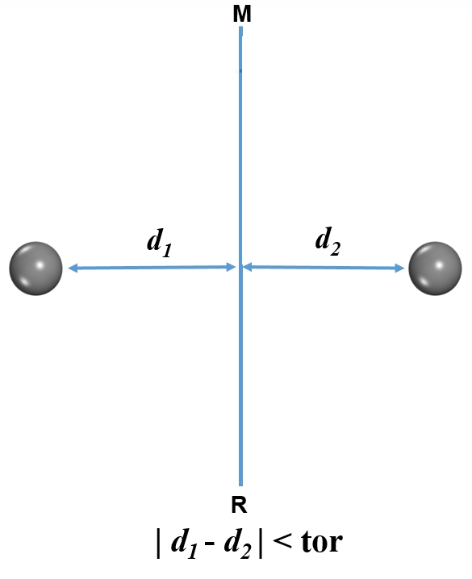
upload the (Pt-bulk.cif) (conventional cell) to server:

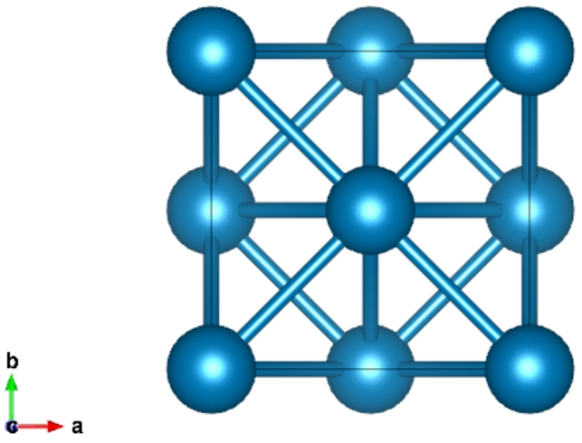
> qvasp -c2p Pt-bulk.cif
Transfer done of Pt-bulk.cif !
> cat POSCAR
Transfer by qvasp
1.0
3.923900 0.000000 0.000000
0.000000 3.923900 0.000000
0.000000 0.000000 3.923900
Pt
4
Direct
0.000000 0.000000 0.000000
0.000000 0.500000 0.500000
0.500000 0.000000 0.500000
0.500000 0.500000 0.000000
> qvasp -findcell 0.1 ## transfer converntional cell to primitive cell
Analysis precision is 0.100
Read data from POSCAR file
Find cell.vasp from POSCAR, Good Luck!
> cat cell.vasp
Transfer by qvasp
1.000
0.00000000 1.96195000 1.96195000
1.96195000 0.00000000 1.96195000
1.96195000 1.96195000 0.00000000
Pt
1
Direct
0.00000000 0.00000000 0.00000000

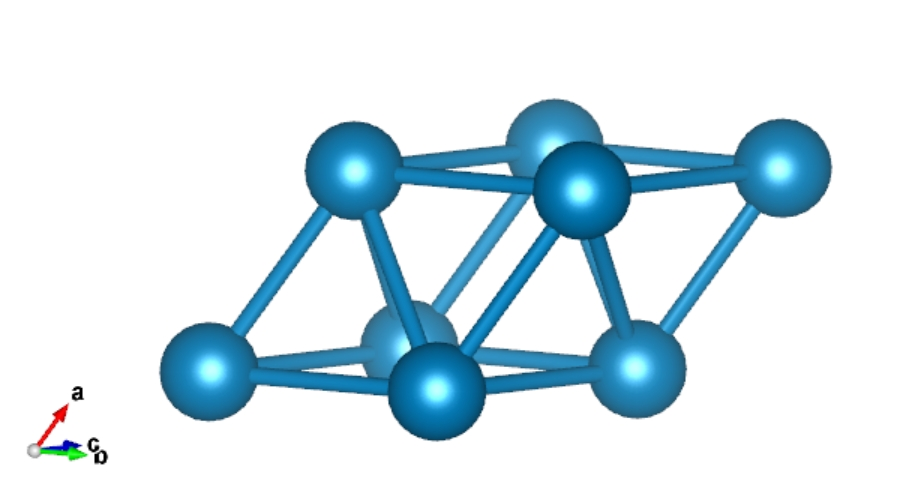
Solid Surface
We can use “qvasp -cls” to cleave the solid surface from a bulk.
“qvasp -cls” require the input structure is primitive cell.
We can use “qvasp -findcell 0.1” to obtain the primitive cell of “cell.vasp”, as aforementioned discussions.
> qvasp -cls cell.vasp ## or use { echo -e ""1 1 1"\n; 4 \n;15\n;0.1\n"|qvasp -cls cell.vasp } in batch mode
Read crystal file from: cell.vasp
Input Miller Index(such as 1 0 0):1 1 1
Input Slab Layers Number(default:6):4
Input Slab Vacuum Thick(default:20 angston):15
Input Slab Depth(default:0.0):0.15 ## determine different exposing terminal of metal oxide: O or metal
Transfer done, please check POSCAR-surface.vasp
> cat POSCAR-surface.vasp
Create by qvasp
1.00000000
2.77461630 0.00000000 0.00000000
-1.38730815 2.40288820 0.00000000
0.00000000 0.00000000 21.79639416
Pt
4
Direct
0.00000000 0.00000000 0.31640069
0.66666667 0.33333333 0.21246310
0.33333333 0.66666667 0.10852551
0.00000000 0.00000000 0.00458791
Open POSCAR-surface.vasp using VESTA:

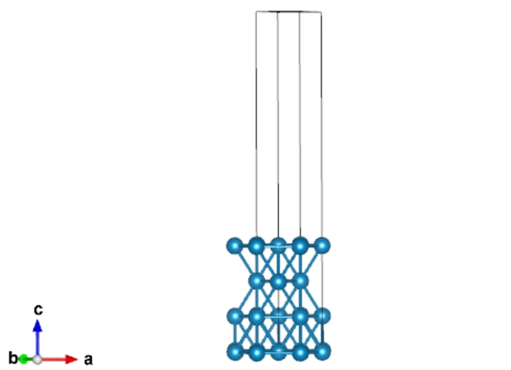
Fix Atomic Layers
For a solid surface models, we usually need to fix the bottom layers because: 1. It is closer to actual surface model becuase the thickness of actual surface model are much thicker than the calculated model, and the atoms in deep layers are usually not change. 2. The force convergence of fixed layers are not considered during structural optimizations, herein, fixing the bottom layers can reduce the computational comsumption.
We can use “qvasp -fix” to fix atomic layers for solid surface.

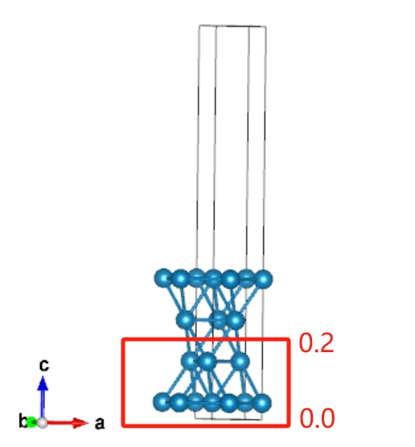
Therefore, we can run the follow command bottom layer:
> cat Pt111
Pt111
1.000
2.81664991 0.00000000 0.00000000
-1.40832496 2.43929038 0.00000000
0.00000000 0.00000000 21.89940071
Pt
4
Direct
0.00000000 0.00000000 0.35752000
0.00000000 0.00000000 0.04248000
0.66666667 0.33333333 0.14749000
0.33333333 0.66666667 0.25251000
> qvasp -fix Pt111
Input the Z coordinate interval you want to fix (eg: 0.1 0.2): 0 0.2
Got it, check the POSCAR!
> cat POSCAR
Pt111
1.000
2.81664991 0.00000000 0.00000000
-1.40832496 2.43929038 0.00000000
0.00000000 0.00000000 21.89940071
Pt
4
Selective dynamics
DIRECT
0.000000000 0.000000000 0.357520000 T T T
0.000000000 0.000000000 0.042480000 F F F
0.666666670 0.333333330 0.147490000 F F F
0.333333330 0.666666670 0.252510000 T T T
Supercell
We can “qvasp -sc” to create the supercell of Pt111 with:
> cat Pt111
Pt111
1.000
2.81664991 0.00000000 0.00000000
-1.40832496 2.43929038 0.00000000
0.00000000 0.00000000 21.89940071
Pt
4
Direct
0.00000000 0.00000000 0.35752000
0.00000000 0.00000000 0.04248000
0.66666667 0.33333333 0.14749000
0.33333333 0.66666667 0.25251000
> qvasp -sc Pt111
Read data from Pt111 file
Conctruct supercell from Pt111, Good Luck!
Please input the supercell along a, b and c directions (eg. 3 3 1):2 2 1
Got it, Please check the supercell221.vasp file
> cat supercell221.vasp
Supercell 221 from Pt111
1.000000
5.633299820000 0.000000000000 0.000000000000
-2.816649920000 4.878580760000 0.000000000000
0.000000000000 0.000000000000 21.899400710000
Pt
16
Direct
0.000000000000 0.000000000000 0.357520000000
0.500000000000 0.000000000000 0.357520000000
0.000000000000 0.500000000000 0.357520000000
0.500000000000 0.500000000000 0.357520000000
0.000000000000 0.000000000000 0.042480000000
0.500000000000 0.000000000000 0.042480000000
0.000000000000 0.500000000000 0.042480000000
0.500000000000 0.500000000000 0.042480000000
0.333333335000 0.166666665000 0.147490000000
0.833333335000 0.166666665000 0.147490000000
0.333333335000 0.666666665000 0.147490000000
0.833333335000 0.666666665000 0.147490000000
0.166666665000 0.333333335000 0.252510000000
0.666666665000 0.333333335000 0.252510000000
0.166666665000 0.833333335000 0.252510000000
0.666666665000 0.833333335000 0.252510000000
Open supercell221.vasp with VESTA:

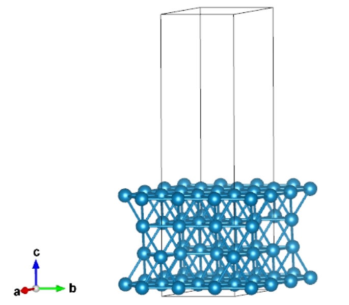
Special quasirandom structures (SQS)
A random alloy has no unit cell, so a DFT calculation has to replace it with a
small periodic cell that reproduces the pair correlations of the random alloy
as closely as possible. qvasp -sqs builds such a special quasirandom
structure with an ATAT/mcsqs-style simulated annealing over the pair
correlations, without needing ATAT.
The input is a structure file whose coordinate lines carry the composition annotation that ATAT uses, i.e. several elements separated by commas on the same site:
> qvasp -sqs MgO.vasp
SQS builder for high-entropy alloys (ATAT/mcsqs-style pair matching)
--------------------------------------------------------------------
Structure file (command line) : MgO.vasp
ATAT-style composition annotation found on the coordinate lines:
group 1: Mg=0.25,Co=0.25,Ni=0.25,Cu=0.25 (4 sites per template cell)
group 2: O=1.0 (4 sites per template cell)
the minimal supercell gives only 4 sites on a disordered sublattice --
far too few for a meaningful correlation match (cf. mcsqs -n).
Sites per disordered sublattice [32] (0 = minimal) : supercell: 2 x 2 x 2 = 8 template cells
expanded cell: 64 atoms
Pair cutoff Rc in Angstrom [5.0] : Annealing steps [auto] :
== Disordered sublattice 1 : Mg=0.25,Co=0.25,Ni=0.25,Cu=0.25 ==
Composition on the sublattice:
Mg x = 0.250 (8 atoms)
Co x = 0.250 (8 atoms)
Ni x = 0.250 (8 atoms)
Cu x = 0.250 (8 atoms)
Matching pair correlations over 2 shells:
shell 1: r = 2.9778 A 192 pairs (z = 12.00 neighbours/site)
shell 2: r = 4.2112 A 96 pairs (z = 6.00 neighbours/site)
initial objective E = 2.7500E+01
Annealing done. Final objective E = 0.0000E+00 (0 = perfect random matching)
Shell-resolved match (p_rand = ideal random, p_SQS = this cell,
alpha = Warren-Cowley SRO, 0 for random):
shell 1 (r = 2.9778 A):
Mg-Mg: 0.06250 -> 0.06250 alpha = 0.00000
Mg-Co: 0.12500 -> 0.12500 alpha = 0.00000
...
== Disordered sublattice 2 : O=1.0 ==
single species: these sites are kept ordered
SQS.vasp written. Check the alpha values: |alpha| < ~0.05 over all
matched shells indicates a good quasirandom cell. More sites and/or
a higher Rc improve the match; for full cluster matching use ATAT mcsqs.
The three questions are the number of sites per disordered sublattice (0 =
use the smallest cell that keeps the stoichiometry), the pair cutoff Rc in
Angstrom and the number of annealing steps (empty = automatic). The tool warns
you when the minimal cell is too small: four sites cannot represent a
25/25/25/25 mixture, which is why the default answer of 32 sites is used here
and the cell becomes 2x2x2 = 64 atoms.
The output that matters is the Warren-Cowley parameter
where \(p_{ij}\) is the probability of finding \(j\) next to
\(i\) and \(x_j\) the concentration of \(j\). alpha = 0 means
perfectly random, negative means ordering, positive means clustering. For this
MgO-based cell all twenty pair parameters come out at 0.00000 over both shells,
i.e. an exact random match, and the objective function reaches 0. That is the
best possible outcome; when it does not reach zero, look at the table and
increase the number of sites or Rc.
Note
SQS.vasp keeps the template lattice. For an alloy with a size mismatch
you still have to relax the cell afterwards (ISIF = 3), and the pair
correlation of the relaxed cell is not guaranteed to stay at zero.
Orthorhombic Cell
We can build orthorhombic cell form any other lattice. For instance, transfer hexagonal graphene to orthorhombic graphene to analysis the armchair and zigzag direction.

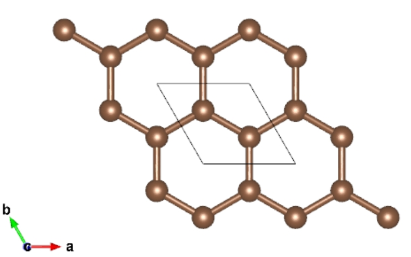
> cat POSCAR ## the input file is POSCAR
graphene-hex
1.0
2.4600000381 0.0000000000 0.0000000000
-1.2300000191 2.1304225263 0.0000000000
0.0000000000 0.0000000000 24.0000000000
C
2
Direct
0.666666687 0.333333343 0.500000000
0.333333313 0.666666627 0.500000000
> qvasp -orthcell
Please input the max value when redefine lattice(1~5):
2
Scaning transfer matrix from POSCAR,Please waiting...
Finishing 20% ...
Finishing 100% ...
Removing the repeat case ...
=======================================================================================================
ID Atomic-num. a b c Redefine matrix
=======================================================================================================
1 4 2.4600 4.2608 24.0000 1 1 0 -1 1 0 0 0 1
2 8 2.4600 4.2608 48.0000 1 1 0 -1 1 0 0 0 2
3 8 2.4600 8.5217 24.0000 1 1 0 -2 2 0 0 0 1
4 8 4.2608 4.9200 24.0000 1 -1 0 2 2 0 0 0 1
5 16 2.4600 8.5217 48.0000 1 1 0 -2 2 0 0 0 2
6 16 4.2608 4.9200 48.0000 1 -1 0 2 2 0 0 0 2
7 16 4.9200 8.5217 24.0000 2 2 0 -2 2 0 0 0 1
8 32 4.9200 8.5217 48.0000 2 2 0 -2 2 0 0 0 2
=======================================================================================================
Which ID do you want to use in above table(eg 1 2):1
Successfully transfer to orthorhombic lattice in POSCAR-1.vasp!
> cat POSCAR-1.vasp
qvasp
1.000000
1.2300000190000000 2.1304225262999998 0.0000000000000000
-3.6900000571999998 2.1304225262999998 0.0000000000000000
0.0000000000000000 0.0000000000000000 24.0000000000000000
C
4
Direct
0.5000000150000000 0.8333333280000000 0.5000000000000000 C0001
0.0000000150000000 0.3333333280000000 0.5000000000000000 C0002
0.4999999700000000 0.1666666570000000 0.5000000000000000 C0003
0.9999999700000000 0.6666666569999999 0.5000000000000000 C0004
The POSCAR-1.vasp belongs to orthorhombic lattice:

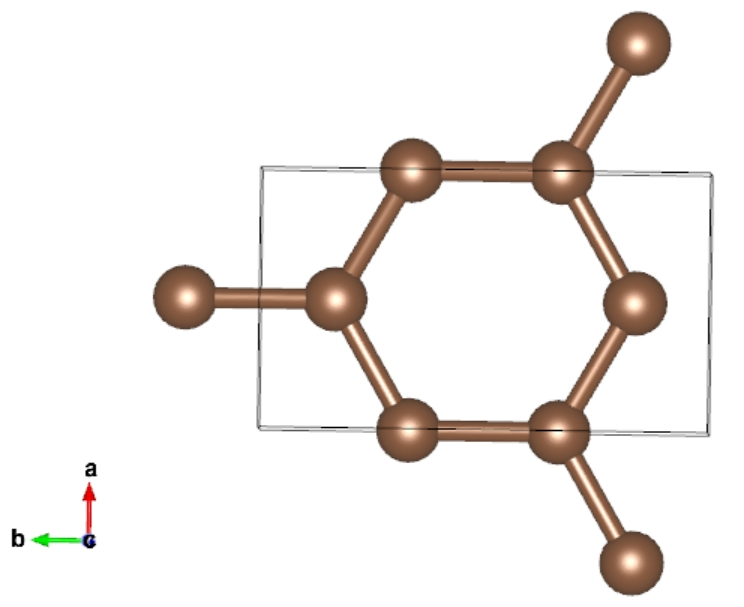
Insert Points for Transition States
> qvasp -it 4
Then the 00/POSCAR 01/POSCAR 02/POSCAR 03/POSCAR 04/POSCAR 05/POSCAR will be generated.
The 00/POSCAR is the reactant and the 05/POSCAR is production.
The 01/POSCAR 02/POSCAR 03/POSCAR 04/POSCAR are the inserted points.
If you insert the transition points using Materials Studio (Tools–>Reaction Preview)
The “*.arc” file will be generated. Upload it on the server and run:
> qvasp -itms R-P.arc
TS images from Materials-Studio archive
cell (frame 1): a= 5.11200 b= 5.11200 c= 15.42210
angles : al= 90.000 be= 90.000 ga= 90.000 deg
frames found : 6 (PBC frame lines)
IMAGES : 4 = 6 - 2 (first frame R, last frame P)
Next: give a Z coordinate interval (Cartesian A, as stored in the
archive); atoms with z inside are FROZEN (F F F) in every image.
Then give the interval, for example ``0 7`` to freeze everything below
z = 7 A (a surface slab with the reacting molecule on top):
Z interval [zmin zmax] (A), enter = freeze nothing : 0 7
INCAR: IMAGES tag set to 4 (line replaced)
R->P displacement distance (dist.pl convention) : 3.0566 A
mean displacement per atom (minimum image) : 0.2524 A
frozen atoms (z in [ 0.0000, 7.0000]): 16 / free atoms: 3
wrote folders 00 to 5 (4 image frames, Direct coordinates, Selective dynamics)
Insert points for TS calculations successfully
The 00/POSCAR … 05/POSCAR folders are generated from the *.arc archive:
00 is the reactant, the last one is the product, and the rest are the
interpolated images. The frozen atoms get F F F in the Selective dynamics
line of every image, so the relaxation moves only the reacting fragment. The
IMAGES tag of the INCAR in the working directory is set to the number of
intermediate images, so the run is ready to submit.
Note
-it (method 1) interpolates between two POSCAR files, -itms
(method 2) reads the frames that Materials Studio’s Reaction Preview
already wrote into the archive. The archive path is a command-line
argument, not a fixed file name.
Eliminate Imaginary Frequency
In searching transition states in chemical reaction.
We usually use the frequency calculations to confirm the saddle point. If there is only one imaginary frequency, the results show that we find the correct saddle point.

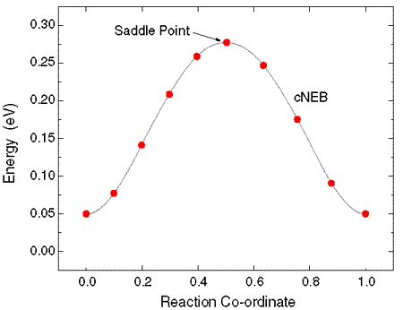
And ‘qvasp -zpe’ will point that this is a transition state and the zero point energy will be calculated.
> qvasp -zpe
this is a transition state
Zero point energy is : .607437 eV
12 f/i= 27.463662 THz 172.559279 2PiTHz 916.089135 cm-1 113.580618 meV
Otherwise, the ‘qvasp -zpe’ will point that “The results are meaningless,baceuse there is too many imaginary frequencies”.
> qvasp -zpe
The results are meaningless,baceuse there is too many imaginary frequencies
Zero point energy is : .388205 eV
8 f/i= 0.966136 THz 6.070412 2PiTHz 32.226831 cm-1 3.995619 meV
9 f/i= 6.124551 THz 38.481687 2PiTHz 204.293017 cm-1 25.329115 meV
The result is sketched as:

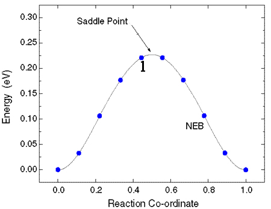
Here we need to eliminate at leat one imaginary frequency.
Empirically, we can use formula of:
X_new = X + dx * correctfactor
to correct the imaginary frequency, for instance:
8 f/i= 0.966136 THz 6.070412 2PiTHz 32.226831 cm-1 3.995619 meV
X Y Z dx dy dz
0.000149 0.006794 2.772739 0 0 0
0.000989 0.000931 6.323516 0 0 0
1.277996 1.277998 0.999969 0 0 0
1.307257 1.266407 4.636842 0 0 0
2.556046 0.002142 2.765337 0 0 0
2.546414 5.008995 6.470307 0 0 0
3.833996 1.277998 0.999969 0 0 0
3.793042 1.257950 4.635615 0 0 0
0.000093 2.555893 2.790012 0 0 0
5.099231 2.554988 6.323704 0 0 0
1.277992 3.833998 0.999969 0 0 0
1.280205 3.825659 4.577362 0 0 0
2.556093 2.560085 2.773202 0 0 0
2.565958 2.547504 6.457231 0 0 0
3.833992 3.833998 0.999969 0 0 0
3.828290 3.825272 4.573322 0 0 0
2.546191 3.652113 8.141990 -0.028615 0.134725 -0.018695
2.774983 4.505877 8.984346 0.910560 -0.176616 0.058730
2.226287 2.611100 8.512488 -0.316690 0.125446 -0.029834
If the correctfactor, the last X coordination should be: 2.226287+(-0.316690)*0.2=2.162949
We can try to use the ‘qvasp -freqfix’ (the old name ‘-zc’ still works) to eliminate at least one imaginary frequency automatically.
The input files is OUTCAR and POSCAR .
> ls
OUTCAR POSCAR
> qvasp -zpe
The results are meaningless,baceuse there is too many imaginary frequencies
Zero point energy is : .388205 eV
8 f/i= 0.966136 THz 6.070412 2PiTHz 32.226831 cm-1 3.995619 meV
9 f/i= 6.124551 THz 38.481687 2PiTHz 204.293017 cm-1 25.329115 meV
> qvasp -freqfix
Frequency fix: remove imaginary modes
1 = molecule / Gamma point (displace along an OUTCAR soft mode)
2 = periodic solid (ASR fix of FORCE_CONSTANTS)
Choose [enter=1] : 1
imaginary modes:
1 -32.227 cm-1
2 -204.293 cm-1
which mode (enter = the strongest imaginary) : 1
following mode 1 ( -32.23 cm-1)
displacement amplitude (A) [enter=0.10] : 0.20
corrected along mode -32.227 cm-1
largest atomic displacement = 0.200 A
POSCAR written (old one -> POSCAR-bak), displace table -> freqfix.dat
> ls
OUTCAR POSCAR POSCAR-bak POSCAR-input freqfix.dat run.log
Three answers are asked, in this order: the branch (1 = molecule/Gamma point, 2 = periodic solid), which imaginary mode to follow, and the displacement amplitude in Angstrom.
The amplitude is a physical displacement in Angstrom, not a
dimensionless factor. VASP prints the eigenvector mass-weighted
(e = u*sqrt(m)), so -freqfix de-mass-weights it with POMASS, normalises
it, and then rescales it so that the largest atomic displacement equals the
requested value. A typical amplitude is 0.05-0.2 A; the default 0.10 A is
usually enough to leave the saddle point. The per-atom displacement table is
written to freqfix.dat so the correction can be checked by hand, e.g.
the last X coordinate becomes 2.226287 + (-0.316690) = 1.909597 A for a
0.10 A correction of the mode above.
Then recalculate the frequency with setting IBRION=2 and NFREE = 2 in INCAR.
We can recheck the frequency with:
> ls
OUTCAR POSCAR
> qvasp -zpe
This is a transition state
Zero point energy is : .389729 eV
9 f/i= 4.913628 THz 30.873234 2PiTHz 163.900977 cm-1 20.321139 meV
Also, the reactant and product require to be without any imaginary frequency, we can use the similar method to eliminate at leat one imaginary frequency.
Nanotube
qvasp can roll any nanosheet, such as 2D materials or surface monolayer, to nanotube or nanoroll. 1. prepared the nanosheet in POSCAR format, but require that: (1) the lattice belongs to orthorhombic crystal system (the beta angle is 90 degree) (use “qvasp -orthcell” to swith) (2) vacuum along c direction and the long lattice direction along b direction.
(We can use “qvasp -sc” to create supercell along b direction, use “qvasp -sw POS1” to switch (a,b,c) axis).
Here is the example for MoS2, the input is the POSCAR format.
> ls
MoS2
> mv MoS2 POSCAR
> qvasp -findcell
Analysis precision is 0.100
Read data from POSCAR file
Find cell.vasp from POSCAR, Good Luck!
> mv cell.vasp POSCAR
Open POSCAR with VESTA:

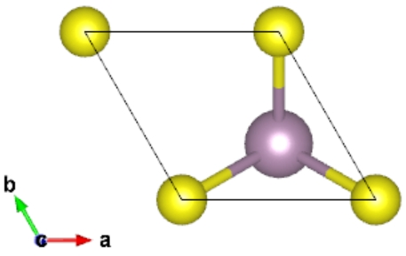
Swith the lattice from hexagonal lattice to orthorhombic lattice:
> qvasp -orthcell
Please input the max value when redefine lattice(1~5):
2
Scaning transfer matrix from POSCAR,Please waiting...
Finishing 20% ...
Finishing 100% ...
Removing the repeat case ...
=======================================================================================================
ID Atomic-num. a b c Redefine matrix
=======================================================================================================
1 6 3.1500 5.4560 14.0000 1 1 0 -1 1 0 0 0 1
2 12 3.1500 5.4560 28.0000 1 1 0 -1 1 0 0 0 2
3 12 3.1500 10.9119 14.0000 1 1 0 -2 2 0 0 0 1
4 12 5.4560 6.3000 14.0000 1 -1 0 2 2 0 0 0 1
5 24 3.1500 10.9119 28.0000 1 1 0 -2 2 0 0 0 2
6 24 5.4560 6.3000 28.0000 1 -1 0 2 2 0 0 0 2
7 24 6.3000 10.9119 14.0000 2 2 0 -2 2 0 0 0 1
8 48 6.3000 10.9119 28.0000 2 2 0 -2 2 0 0 0 2
=======================================================================================================
Which ID do you want to use in above table(eg 1 2):1
Successfully transfer to rectangular lattice in POSCAR-1.vasp!
Open POSCAR-1.vasp with VESTA:

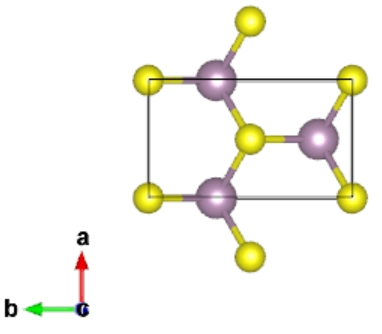
Create the supercell along b direction:
> qvasp -sc
Read data from POSCAR file
Conctruct supercell from POSCAR, Good Luck!
Please input the supercell along a, b and c directions (eg. 3 3 1):1 15 1
Got it, Please check the supercellx1x15x1.vasp file
Open supercell1151.vasp with VESTA:

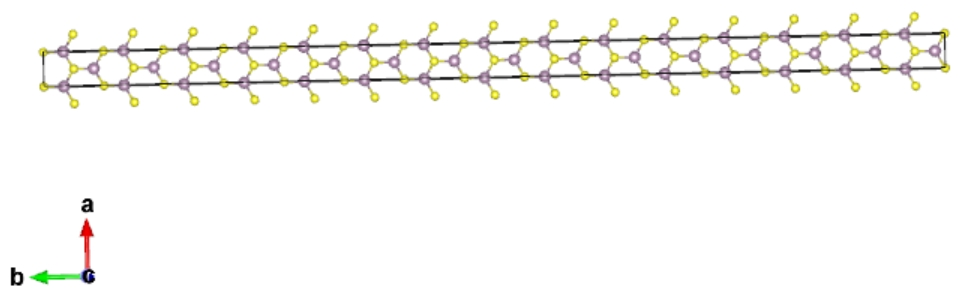
Rolling supercell1151.vasp to nanotube:
> qvasp -nanotube supercell1151.vasp
You should know:
1.Roll along x direction;
2.Bending along Y direction to a cycle (360);
3.Vaccum layer direction along z direction for a 2D structue.
Input the rolling angle from 0 to 360:360
Transfer it to Nanotube successfully!Please check POSCAR-nanotube!
Cite with 'The calculations were assisted by the qvasp[1]'
[1] Wencai Yi, et al.qvasp: A Flexible Toolkit for VASP Users in Materials Simulations
Open POSCAR-nanotube with VESTA:

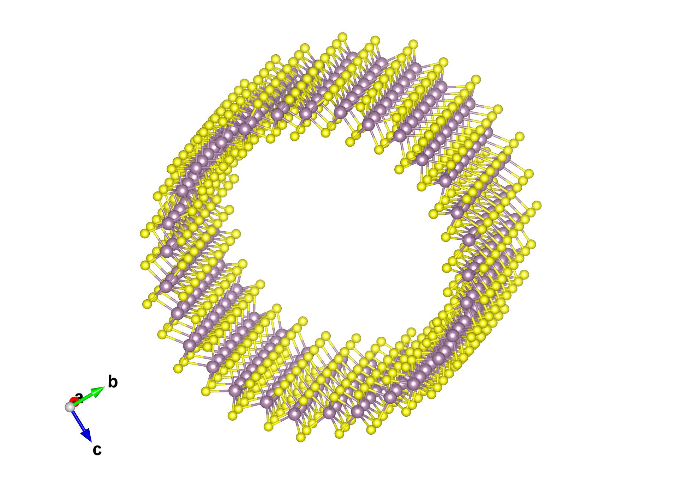
Heterojunction
We can use “qvasp -hej POS1 POS2” to build the heterojunction (pure Fortran since v3, no python3 needed).
Here if we want to build the heterojunction between graphene (hexagonal lattice) and phosphorene (orthographic lattice).
The primitive cell of graphene is:
The primitive cell of phosphorene is:

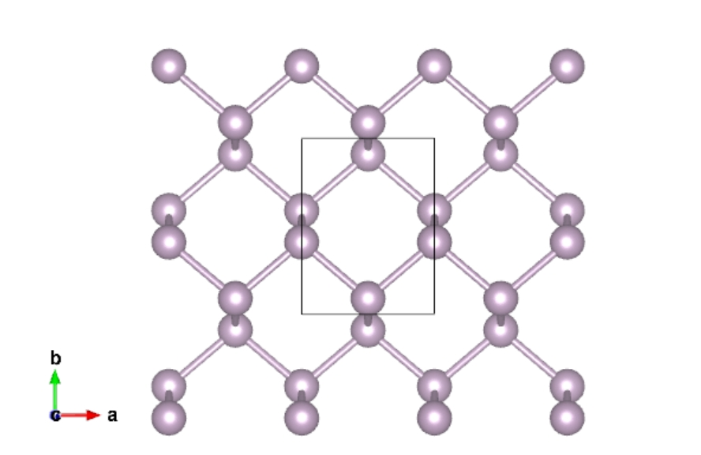
Upload the graphene.cif and phosphorene.cif to Linux system, transfer them to the format of POSCAR using “qvasp -c2p graphene.cif”.
> qvasp -c2p graphene.cif # transfer to graphene.vasp
Transfer done of graphene.cif !
> qvasp -c2p phosphorene.cif # transfer to phosphorene.vasp
Transfer done of phosphorene.cif !
> ls
graphene.cif graphene.vasp phosphorene.cif phosphorene.vasp POSCAR
> qvasp -hej graphene.vasp phosphorene.vasp
*************************************************************
Author:JunLuo and JiZhou
Email:junluo@hnu.edu.cn Hunan University
Function: A program that can be used to build heterostructure with two POSCAR
Version:1.1
First released time: 2019.07.30
Last modified time: 2021.12.30 by Wencai Yi
*************************************************************
The target file has been converted into primitive cell!
The target file has been converted into primitive cell!
Please enter the maximum angle mismatch you are allowed (unit: degree): 5
Please enter the maximum lattice mismatch rate you are allowed (generally 0.05): 0.05
Please enter the angle of the heterostructure you want (unit: degree): 120
Please customize the lattice parameters of the heterostructure:
1) Lattice parameters of the lower material
2) Lattice parameters of the upper material
3) Average of the lattice parameters of the upper and lower materials
Please customize the lattice parameters of the heterostructure:3
Calculating, please wait a moment, it usually takes 30-50s.
1) Sorted by total atomic number
2) Sorted by custom's angle
------------>>
Which file data do you want to use (1 or 2):1
===============================================================================================
ID Atomic-number Lattice Lattice-mis(%) Angle Angle-mis(degree)
===============================================================================================
1 20 11.14 4.33 2.95 2.44 40.90 37.10 3.81
2 28 9.90 4.33 0.60 2.44 90.00 90.00 0.00
3 28 10.80 4.33 0.89 2.44 113.40 113.80 0.39
4 28 13.15 4.33 1.40 2.44 49.10 48.60 0.52
5 36 13.15 6.57 1.40 1.38 38.20 41.40 3.20
6 38 11.14 8.83 2.95 1.56 35.20 37.10 1.87
7 38 11.14 6.57 2.95 1.38 51.80 52.90 1.13
8 38 10.87 8.83 2.06 1.56 37.30 37.10 0.23
9 38 10.87 6.57 2.06 1.38 55.70 52.90 2.77
10 38 15.64 6.57 2.97 1.38 35.20 33.50 1.72
11 38 8.83 6.57 1.56 1.38 87.00 90.00 3.00
12 40 11.14 8.65 2.95 2.44 40.90 37.10 3.81
13 48 19.00 4.33 2.89 2.44 63.70 62.10 1.56
14 54 10.87 13.44 2.06 4.46 32.40 37.10 4.72
15 54 10.87 13.84 2.06 1.49 32.40 34.60 2.25
16 54 8.83 13.03 1.56 3.22 43.90 48.60 4.68
===============================================================================================
Which ID do you want to use in above table(eg 1 2):2 4
Now we are starting to build a heterostructure
Please customize the thickness of vacuum layer of the heterostructure (unit: Angstrom):20
Please customize the layer spacing of the heterostructure (unit: Angstrom):3
Successfully build heterostructure in heter-2.vasp!
Successfully build heterostructure in heter-4.vasp!
Cite with "The calculations were assisted by the qvasp and vaspkit [1-2]"
[1] Wencai Yi, et al.qvasp: A Flexible Toolkit for VASP Users in Materials Simulations
[2] Vei WANG, et al. VASPKIT: A user-friendly interface facilitating high-throughput computing and analysis using VASP code
> ls
graphene.vasp graphene.cif heter-4.vasp SYMMETRY TRANSMAT-2.2 TRANSMAT-4.2 heter-2.vasp
phosphorene.vasp phosphorene.cif sorted_for_cus_chose.txt TRANSMAT-2.1 TRANSMAT-4.1
The heter-2.vasp and heter-4.vasp are the constructed heterojunction.
The TRANSMAT-2.2, TRANSMAT-2.1, TRANSMAT-4.1 and TRANSMAT-4.2 is the transformational matrix for graphene and phosphorene.
Open heter-2.vasp using VESTA:

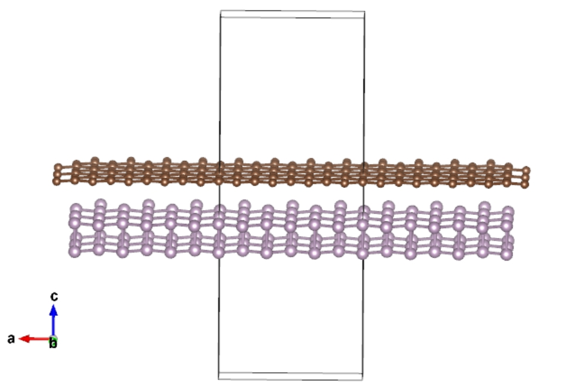
Note
The input structures of POS1 and POS2 require a vaccum along c directions, and the thickness of vaccum is > 10 A.
Moire Superlattice
We can use “qvasp -mos POSCAR” to build Moire superlattice.
The primitive cell of phosphorene for the moire model is:
Build the Moire superlattice:
> qvasp -mos 03_black_P_POSCAR
*************************************************************
Author:Wencai Yi
Email:yi.wencai@163.com Qufu Normal University
Function: A program that can be used to build Moire supperlattice with POSCAR
Version:1.1
First released time: 2022.01.02
Last modified time: 2022.01.15 by Wencai Yi
Thanks JunLuo for the code of building heterojunction
*************************************************************
The target file has been converted into primitive cell!
Please enter the maximum angle mismatch you are allowed (unit: degree): 5
Please enter the maximum lattice mismatch rate you are allowed (generally 0.05): 0.05
Calculating, please wait a moment, it usually takes 30-50s.
===============================================================================================================
ID Atomic-num. Lattice Lattice-mis.(%) Angle Angle-mis. Moires-angle
===============================================================================================================
1 200 23.46 23.46 4.98 4.98 138.80 138.80 0.00 7.57
2 140 23.46 18.28 4.98 4.92 144.90 142.50 2.43 7.57
3 160 23.46 22.51 4.98 3.24 147.00 146.40 0.65 7.57
4 96 18.28 18.28 4.92 4.92 148.60 148.60 0.00 10.00
5 160 21.55 16.83 3.84 3.38 53.30 52.90 0.35 14.47
6 220 21.55 18.69 3.84 0.38 83.20 80.80 2.42 14.47
7 96 21.55 13.35 3.84 3.08 37.40 37.10 0.33 14.47
8 124 21.55 16.83 3.84 3.38 38.40 38.10 0.35 14.47
9 132 21.55 17.67 3.84 1.75 40.90 37.10 3.77 14.47
10 156 21.55 22.39 3.84 4.37 34.70 37.10 2.35 14.47
11 160 21.55 17.67 3.84 1.75 51.60 47.80 3.77 14.47
12 184 21.55 22.15 3.84 0.00 43.00 45.70 2.72 14.47
13 188 21.55 18.28 3.84 4.92 117.70 122.20 4.47 14.47
14 192 21.55 16.17 3.84 3.68 91.40 86.40 4.96 14.47
15 212 21.55 22.39 3.84 4.37 51.60 53.90 2.35 14.47
16 256 21.55 21.55 3.84 3.84 91.40 91.40 0.00 14.47
17 88 16.83 16.17 3.38 3.68 141.90 146.50 4.61 14.82
18 116 16.83 16.17 3.38 3.68 48.30 52.90 4.61 14.82
19 120 16.83 13.35 3.38 3.08 104.80 104.10 0.68 14.82
20 124 16.83 13.35 3.38 3.08 90.70 90.00 0.68 14.82
21 156 16.83 18.28 3.38 4.92 115.50 110.70 4.82 14.82
22 160 16.83 17.67 3.38 1.75 104.80 100.70 4.13 14.82
23 164 16.83 17.67 3.38 1.75 94.10 90.00 4.13 14.82
24 168 16.83 18.28 3.38 4.92 84.10 79.30 4.82 14.82
25 200 16.83 24.07 3.38 0.23 61.50 65.60 4.15 14.82
.....
===============================================================================================================
Which ID do you want to use in above table(eg 1 2):1 4
Now we are starting to build a heterostructure
Please customize the thickness of vacuum layer of the heterostructure (unit: Angstrom):20
Please customize the layer spacing of the heterostructure (unit: Angstrom):3
Successfully build heterostructure in heter-1.vasp!
Successfully build heterostructure in heter-4.vasp!
Cite with "The calculations were assisted by the qvasp and vaspkit [1-2]"
[1] Wencai Yi, et al.qvasp: A Flexible Toolkit for VASP Users in Materials Simulations
[2] Vei WANG, et al. VASPKIT: A user-friendly interface facilitating high-throughput computing and analysis using VASP code
> ls
03_black_P_POSCAR heter-1.vasp heter-4.vasp sorted_for_cus_chose.txt TRANSMAT-1.1 TRANSMAT-1.2 TRANSMAT-4.1 TRANSMAT-4.2
The heter-1.vasp and heter-4.vasp are the constructed Moire superlattice with Moire angle of 7.57o and 10.00o.
The TRANSMAT-1.1, TRANSMAT-1.2, TRANSMAT-4.1 and TRANSMAT-4.2 is the transformational matrix for graphene and phosphorene.
Open heter-2.vasp using VESTA:

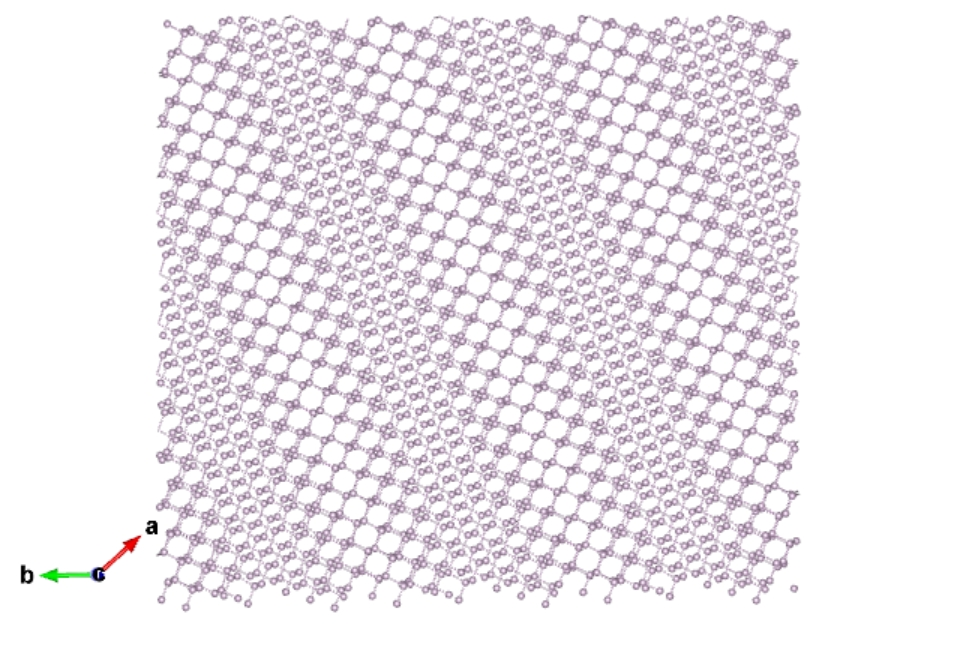
Note
The input structures of 03_black_P_POSCAR require a vaccum along c directions, and the thickness of vaccum is > 10 A.
Note
Since v3.01 the moiré search maps layer 2 onto the layer-1 supercell with the
exact affine map W = inv(T2) @ T1 and prints the principal strains of
the match. Some IDs are strongly strained models, not strain-free moiré
superlattices: e.g. for black phosphorus, ID 1 (twist 7.18 deg, 48 atoms)
carries principal strains of −5.91 % / +6.71 % and qvasp prints a WARNING
(the layer-2 P–P bonds become 2.037/2.206/2.306 Å instead of 2.169/2.169/2.204 Å).
Prefer IDs whose principal strains are small — for black phosphorus ID 23
(twist 90 deg, 96 atoms) has −0.75 % / +0.76 % and keeps two bond lengths
(2.166/2.206 Å). Check the printed strain values before using the output in
production calculations.
Adsorption Sites
We can use “qvasp -as POS1” to calculated unequal adsorption sites for any nanosheet.
We take black phosphorene as example:
> cat blackphosphorene.vasp
Supercel
1.00000000
9.8958611426369991 0.0000000000000000 0.0000000000000000
0.0000000000000000 13.8909267570780006 0.0000000000000000
0.0000000000000000 0.0000000000000000 20.0000000000000000
P
36
Direct
0.1666666666670000 0.2841828552580000 0.4475767814850000
0.5000000099340000 0.2841828552580000 0.4475767814850000
0.8333333532020000 0.2841828552580000 0.4475767814850000
0.1666666666670000 0.6175161985249999 0.4475767814850000
0.5000000099340000 0.6175161985249999 0.4475767814850000
0.8333333532020000 0.6175161985249999 0.4475767814850000
0.1666666666670000 0.9508495417930000 0.4475767814850000
.....
> qvasp -as blackphosphorene.vasp
Top sites:
0.500000009934000 0.343817144010000 0.552614151113000
Bridge sites:
0.416666676600500 0.397333346101000 0.552518660814000
Hollow sites:
0.166666671633500 0.129856251909380 0.552486830714333
0.500000014901000 0.532852322556583 0.552486830714333
Therefore, 4 unequal adosprion sites are found in black phosphorene.

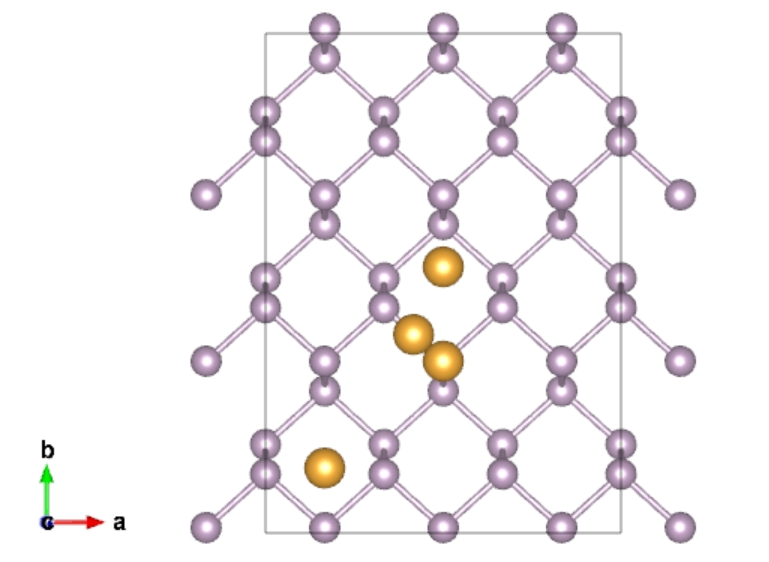
Postprocessing Toolkits
Work Function
We can obtain electrostatic potential function by seting LVHAR = .TRUE. in INCAR (qvasp -wk).
Then the LOCPOT file will be obtained.
And we can using the “qvasp -wkd”
> ls
INCAR LOCPOT OUTCAR
> qvasp -wkd
Input Fermi level(Default: read from current OUTCAR):
Confirm Fermi Level: -1.95580000000000
Which direction do you want to keep? (1-3 --- 1=X,2=Y,3=Z):3
Vacuum Level: 2.68065953254700
Work Function: 4.63645953254700
Got it, check vline.dat!
The calculated work function is 4.636 eV.
And the vline.dat can be plotted:

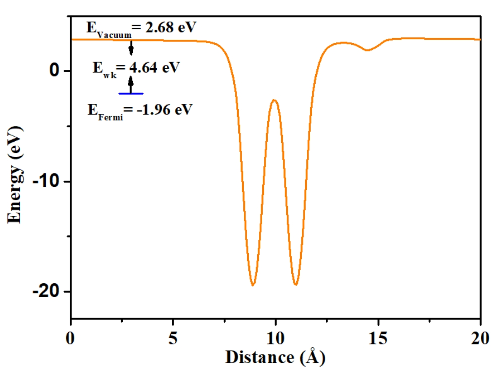
Note
The parameters of dipole correction (LDIPOL = .TRUE.; IDIPOL = 3; DIPOL =0.5 0.5 0.5) should be condiered if vline.dat is plotted as:

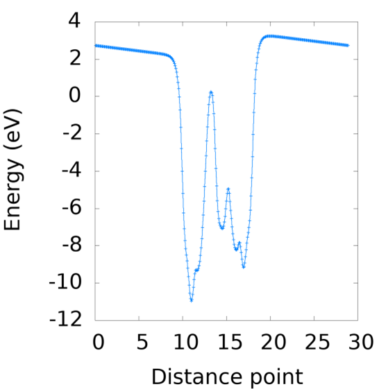
Band Structure
We need to use primitive cell to calculate the band structre if we do not want the get the error, such as: https://doi.org/10.1103/PhysRevLett.110.029603
We take the diamond structure as example:
Do structual optimization to obtain a CONTCAR file.
> ls
C.cif
(base) [yiwc@mu01 t]$ qvasp -c2p C.cif
Transfer done of C.cif !
> qvasp -findcell
Analysis precision is 0.100
Read data from POSCAR file
Find cell.vasp from POSCAR, Good Luck!
> mv cell.vasp POSCAR
> qvasp -k 0.03
The density of Brillouin zone is: 0.030 (2*PI/Angstrom)
The k-mesh was calculated as: 16 16 16
KPOINTS was created with k-kmesh: 16 16 16 due to the material dimension
The dimension of material may be wrong and you could revise it manually
> qvasp -pbe C
The POTCAR is produced successfully
Lte's check it
TITEL = PAW_PBE C 08Apr2002
> qvasp -relax
The INCAR for structure optimize was produced sucessufully
> ls
C.cif C.vasp INCAR KPOINTS POSCAR POTCAR
> vi INCAR
> cat INCAR
SYSTEM = qvasp
INCAR-basic
PREC = Normal
ENCUT = 400 eV
NELMIN= 5
LREAL = F ## set to Auto if the valance electron number > 20
EDIFF = 1E-5
ISPIN = 1 ## For magnetism set
NCORE = 2 ## Important to reduce calculate time, equal sqrt(cpu cores)
Ionic Relaxation
ICHARG = 2
EDIFFG = -0.01 #force
NSW = 300 #max steps for IOM
IBRION = 2
POTIM = 0.5
ISIF = 3 #not change lattice:2 chang lattice:3
PSTRESS= 0
LCHARG = F
LWAVE = F
Then edit the INCAR to confirm that ISIF=3, EDIFFG=-0.01
Run the VASP jobs and we will obtain the “CONTCAR” file.
Do self-consistency to obtain a CHGCAR file.
> mv CONTCAR POSCAR
> vi INCAR
> cat INCAR
SYSTEM = qvasp
INCAR-basic
PREC = Normal
ENCUT = 400 eV
NELMIN= 5
LREAL = F
EDIFF = 1E-5
ISPIN = 1
NCORE = 2
Ionic Relaxation
ICHARG = 2
EDIFFG = -0.01
NSW = 0
IBRION = -1
POTIM = 0.5
ISIF = 3
PSTRESS= 0
LCHARG = T
LWAVE = F
Run the VASP jobs and we will obtain the “CHGCAR” file.
Do band structure calculation to obtain “EIGENVAL” file.
We can use seekpath or “qvasp -vaspkit” to set the KPOINTS with high symmetry points.

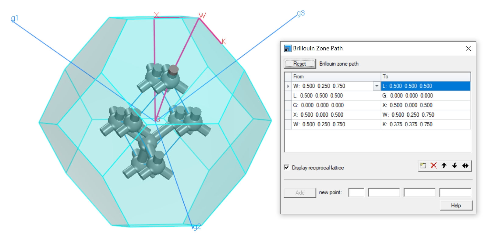
> vi INCAR
> cat INCAR
SYSTEM = qvasp
INCAR-basic
PREC = Normal
ENCUT = 400 eV
NELMIN= 5
LREAL = F ## set to Auto if the valance electron number > 20
EDIFF = 1E-5
ISPIN = 1 ## For magnetism set
NCORE = 2 ## Important to reduce calculate time, equal sqrt(cpu cores)
Ionic Relaxation
ICHARG = 11
LORBIT = 10
EDIFFG = -0.01 #force
NSW = 0 #max steps for IOM
IBRION = -1
POTIM = 0.5
ISIF = 3 #not change lattice:2 chang lattice:3
PSTRESS= 0
LCHARG = F
LWAVE = F
> cat KPOINTS
K-Path Generated by VASPKIT.
20
Line-Mode
Reciprocal
0.0000000000 0.0000000000 0.0000000000 GAMMA
0.5000000000 0.0000000000 0.5000000000 X
0.5000000000 0.0000000000 0.5000000000 X
0.6250000000 0.2500000000 0.6250000000 U
0.3750000000 0.3750000000 0.7500000000 K
0.0000000000 0.0000000000 0.0000000000 GAMMA
0.0000000000 0.0000000000 0.0000000000 GAMMA
0.5000000000 0.5000000000 0.5000000000 L
0.5000000000 0.5000000000 0.5000000000 L
0.5000000000 0.2500000000 0.7500000000 W
0.5000000000 0.2500000000 0.7500000000 W
0.5000000000 0.0000000000 0.5000000000 X
One the “EIGENVAL” file is obtained, we can use “qvasp -bandd” to obtain the band.dat to plot the band structure.
> qvasp -bandd
Input Fermi level(Default: read from current OUTCAR):
Confirm Fermi Level: 9.94490000000000
Type yes for HSE band caculation(Default: no):
The VBM was at 1 kpoints 3 band: 0.0000 0.0000 0.0000 9.8037 eV
The CBM was at 15 kpoints 5 band: 0.3684 0.0000 0.3684 13.9215 eV
This produces a indirect band gap: 4.1178
Plotting Band Structure By Origin from band.dat! Here you get it!

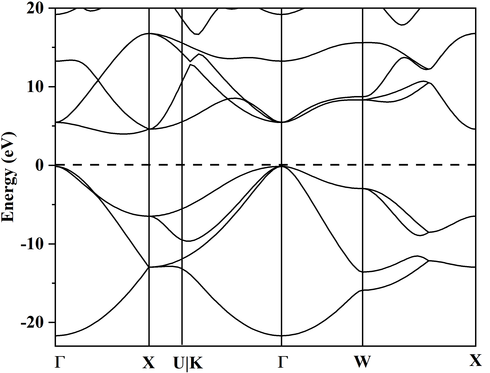
Orbital- and atom-projected bands
band.dat gives you the energies. qvasp -bandp adds the orbital
character: it reads EIGENVAL together with PROCAR and writes a table whose rows
are (k, band) and whose columns are the projected weights of s, py, pz, px,
dxy, dyz, dz2, dxz, x2-y2 and the total.
> qvasp -bandp
Fermi level from OUTCAR: 9.8837 eV (shifted to 0)
EIGENVAL: 75 k-points, 20 bands
PROCAR: 2 ions
Atoms to project, e.g. "1-2" [enter = all] :
Projected 20 bands over 75 k-points;
Got it, weights summed over selected atoms.
6 high-symmetry points labeled from KPOINTS comments (KLABELS/vaspkit not needed):
0.000000 G
1.758273 X
2.637409 W
3.259053 K
5.123983 G
6.646692 L
Output: projected_band.data (continuous k-dist, E-E_F, s..x2-y2, tot), KLINES.dat (k-dist, label)
The single question restricts the projection to a subset of atoms – 1-2
for the two atoms of the primitive cell, empty for all of them – which is how
you separate the contributions of two sublattices or of a slab and an
adsorbate. The energies are shifted so that the Fermi level read from the
OUTCAR sits at zero, and the high-symmetry labels are taken from the comments
of the KPOINTS file, so neither KLABELS nor vaspkit is needed.
projected_band.data starts with a header that repeats the k-path and the
labels, and then one line per (k, band):
#K-Path Energy s py pz px dxy dyz dz2 dxz x2-y2 tot
# NKPTS & NBANDS: 75 20
# High-symmetry points (k-distance, label):
# 0.000000 G
...
Plot the columns against the first one, or filter on tot to draw a
fat-band picture: the value in tot is the weight of the state on the
selected atoms, so a band whose tot drops to zero along part of the path is
a band that lives on the atoms you did not select.
Band unfolding for a supercell
A defect, an adsorbate or an alloy forces you to use a supercell, and then the
bands of the supercell are folded into a small Brillouin zone that cannot be
compared with the bands of the pristine primitive cell. qvasp -banduf
implements the Popescu-Zunger unfolding and recovers an effective band structure
(EBS) on the primitive-cell path.
It runs in two stages. Mode 1 prepares the supercell calculation:
> qvasp -banduf
Mode (1=setup, 2=postprocess) [enter=2] : 1
Read transformation matrix from the TRANSMAT.in file if it exists.
3 0 0 # must be three integers
0 3 0 # must be three integers
0 0 1 # must be three integers
...
Mode 1 writes transmatrix, KPOINTS_MAPPING_TABLE.in, POSCAR-super,
KPOINTS-super and an optional KLABELS; run the supercell SCF and band
calculation with those files. Mode 2 post-processes the finished run:
> qvasp -banduf
Mode (1=setup, 2=postprocess) [enter=2] : 2
Transformation matrix accepted; supercell contains 9 primitive cell(s)
Supercell: 18 atoms
Note: skipping the first 4 probe k-point(s) of KPOINTS (not part of the unfolded path)
k path: 103 KPOINTS rows, 99 unfolded path point(s)
[qvasp WARNING] OUTCAR not found or no E-fermi line -- using Fermi = 0 eV!
EBS energies are NOT shifted to the Fermi level.
EIGENVAL: 103 k-points, 60 bands
Fermi level from OUTCAR: 0.0000 eV (shifted to 0)
Unfolded 60 bands over 99 path k-point(s).
Got it, effective band structure written to EBS.dat
4 path corners labeled (labels borrowed from the optional KLABELS file):
0.000000 K
1.696679 GAMMA
3.166047 M
4.014387 K
Here a 3x3x1 supercell of a 2-atom cell (18 atoms, 9 primitive cells) is unfolded along the K-GAMMA-M-K path of the primitive cell. The first few k-points of the supercell KPOINTS are the probe points that the mapping table needs; they are not part of the path and are skipped with a note.
EBS.dat has one block per k-point, and each block is a list of
(k-distance, energy, weight) rows:
#KPT:1
0.0000 -21.2493 0.0000
0.0000 -18.6700 0.0000
...
The third column is the spectral weight: a value near 1 means the supercell state is a good primitive-cell state at that k, and a value near 0 means it is a folded state that does not belong to the primitive band. Plot it as a scatter with the weight as the marker size or the colour, and the primitive bands reappear as bright lines even though the supercell has 9 times as many states.
Warning
If the OUTCAR of the supercell run is missing, the tool warns
using Fermi = 0 eV and the EBS is not shifted. Keep the OUTCAR in
the folder, or subtract the Fermi level yourself before comparing with
band.dat.
Band Edges Positions
Band edges positions is crucial to the design photocatalyst, Schottky diode:

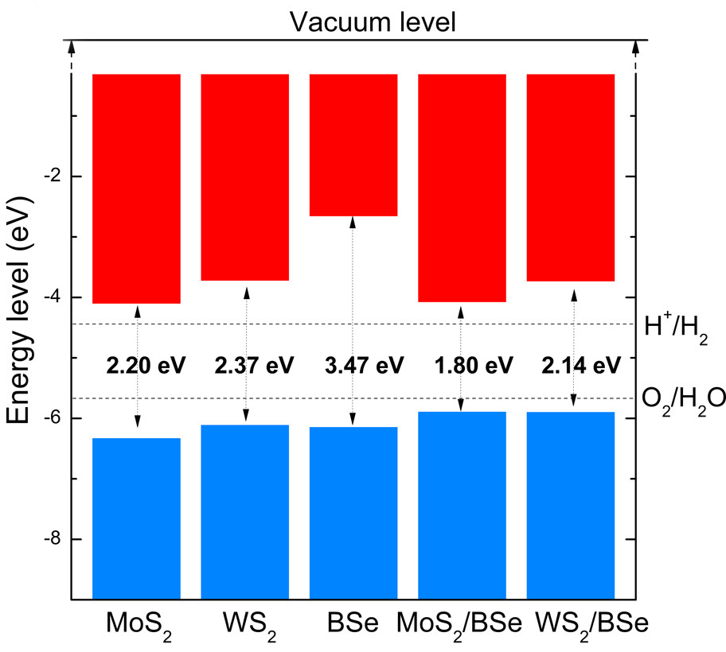

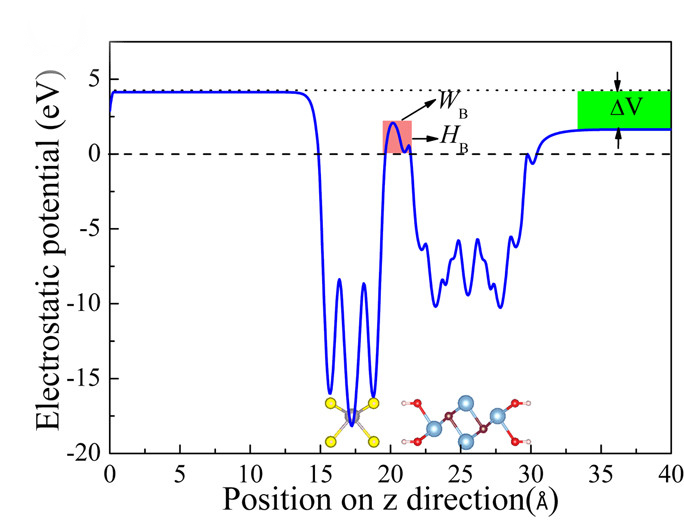
For 0D, 1D, 2D materials, we can add a parameter of LVHAR=.TRUE. in INCAR
when we calculate the band structre.
Then we can use “qvasp -wkd” to obtain the value of work funtion \(E_{wk}\).
If the vaccum energy level is set to 0 eV, the position of valence band maximum (VBM) is:
\(E_{VBM}\) = (-1) x \(E_{wk}\)
The conduction band minimum (CBM) can be calculated by:
\(E_{CBM}\) = \(E_{wk}\) + \(E_{bandgap}\)
Note
The parameters of dipole correction (LDIPOL = .TRUE.; IDIPOL = 3; DIPOL =0.5 0.5 0.5) should be condiered if the calculated system contain dipole moment.
For 3D materials, two method are usually used:
Cleave a surface and obtain the workfunction as aforementional discussions.

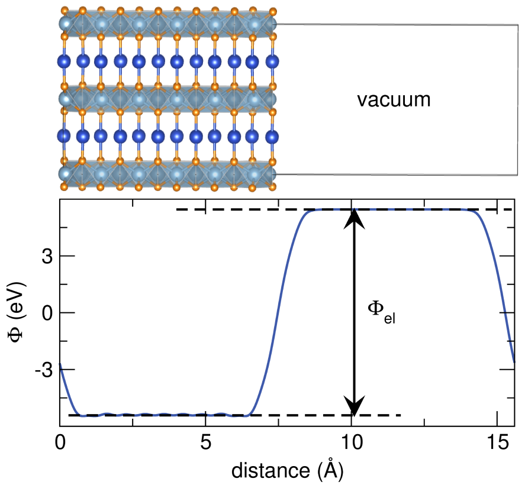
Using the deep energy level to align the CBM and VBM between different materials (set ICORELEVEL=2 in INCAR)
Correct Band Gap using Scissor
The PAW_PBE functional usually underestimate the value of band gap.
Instead, the HSE06 functional can present a more accurate value of band gap.
However, the HSE06 functional reuqire too large computational compsumption, especially for the large calculated models.
Here, “qvasp -scissorb” provide a scissor operate to correct the band gap for PAW_PBE functional in band structure calculations.
After we calculate the band structure, the band structure is plotted as:

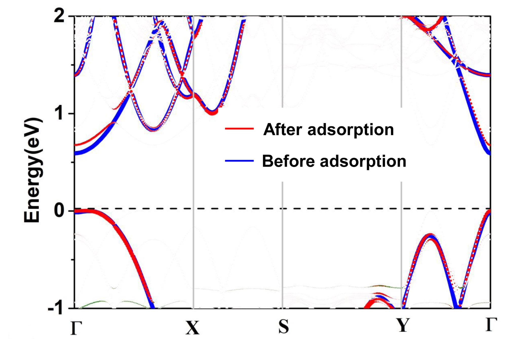
Then we use “qvasp -scissorb” to postprocesse the raw data of band structure calculations.
> qvasp -scissorb
Input Fermi level(Default: read from current OUTCAR):
Confirm Fermi Level: -2.05610000000000
Input the value of scissor: 1.12 ## is the correct value
The VBM was at 6 kpoints 10 band: 0.0641 0.0000 0.0000 -2.0890 eV
The CBM was at 1 kpoints 11 band: 0.0000 0.0000 0.0000 -0.3763 eV
This produces a indirect band gap: 1.7127
Plotting Band Structure By Origin from band.dat! Here you get it!
We can plot the band.dat as:

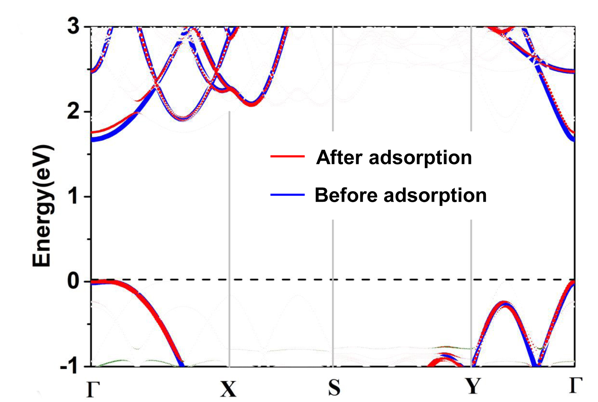
Density of States
The calculated step of density of state is similar with band structure.
However, for density of state calculations, not require primitive cell and high-symmetry-points KPOINTS, is more simple.
We take the diamond structure as example:
Do structual optimization to obtain a CONTCAR file. (refer the band structure calculations)
Do self-consistency to obtain a CHGCAR file. (refer the band structure calculations)
Do density of state calculation to obtain “DOSCAR” file.
> qvasp -dos
The INCAR for DOS was produced sucessufully
> cat INCAR
SYSTEM = qvasp
INCAR-basic
PREC = Normal
ENCUT = 400 eV
NELMIN= 5
LREAL = F
EDIFF = 1E-5
ISPIN = 1
NCORE = 2
Density of states
NELM = 100
ICHARG = 11
LORBIT = 10
NSW = 0
IBRION = -1
ISMEAR = -5
NEDOS = 600
# NBANDS=223
LCHARG = F
LWAVE = F
> qvasp -k 0.015
The density of Brillouin zone is: 0.015 (2*PI/Angstrom)
The k-mesh was calculated as: 32 32 32
KPOINTS was created with k-kmesh: 32 32 32 due to the material dimension
The dimension of material may be wrong and you could revise it manually
> cat KPOINTS
Auto
0
G
32 32 32
0. 0. 0.
After set ICHARG = 11 and improve the density of KPOINTS, we can run VASP jobs.
> qvasp -dosd
Got it, please check DOS*.dat
> ls
CHGCAR DOS0.dat DOSCAR IBZKPT OSZICAR POSCAR PROCAR vasprun.xml
C.cif CONTCAR DOS1.dat EIGENVAL INCAR OUTCAR POTCAR REPORT WAVECAR
CHG C.vasp DOS2.dat KPOINTS PCDAT PRIMCELL.vasp SYMMETRY XDATCAR
Here DOS0.dat is the total density of state.
DOS1.dat is the projected DOS of 1th atom.
DOS1.dat is the projected DOS of 2th atom.
We can plot the DOS0.dat as:

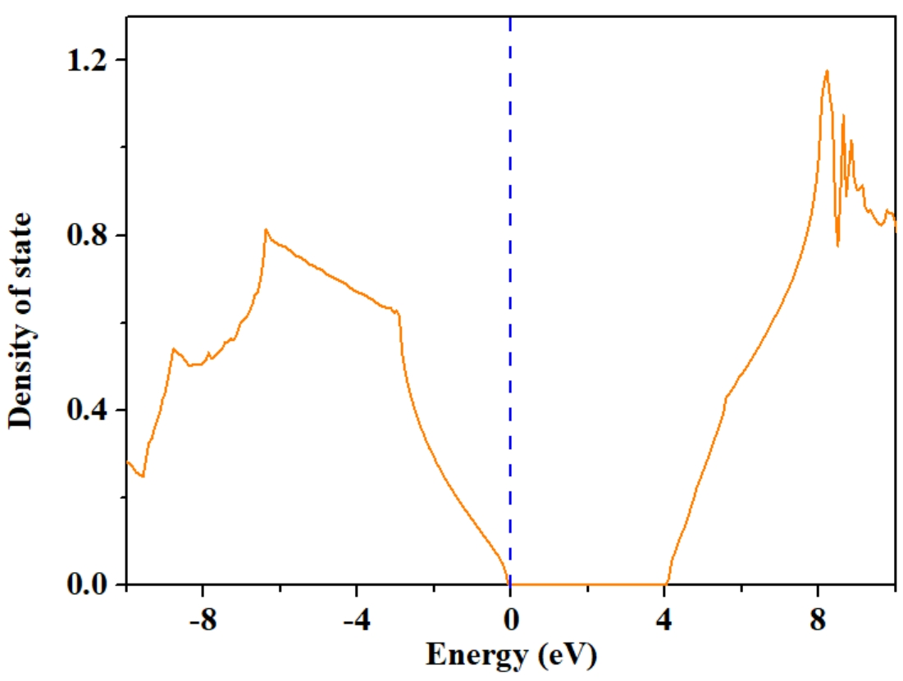
Correct Density of State using Scissor
The PAW_PBE functional usually underestimate the value of band gap.
Instead, the HSE06 functional can present a more accurate value of band gap.
However, the HSE06 functional reuqire too large computational compsumption, especially for the large calculated models.
Here, “qvasp -scissord” provide a scissor operate to correct the band gap for PAW_PBE functional in density of states calculations.
> qvasp -scissord
Input the value of scissor:
1.5 ## this is the correct value
The OUTCAR exists, we use it to get the Fermi level,
the RWIGS tag and the number of spins.
Fermi level: 9.8587
Unpolarized calculation
LORBIT = 10
After correct the density of state using scissor.
The band gap is change from 4.12 eV to 5.62 eV, which is comparable to the experimental measured value.

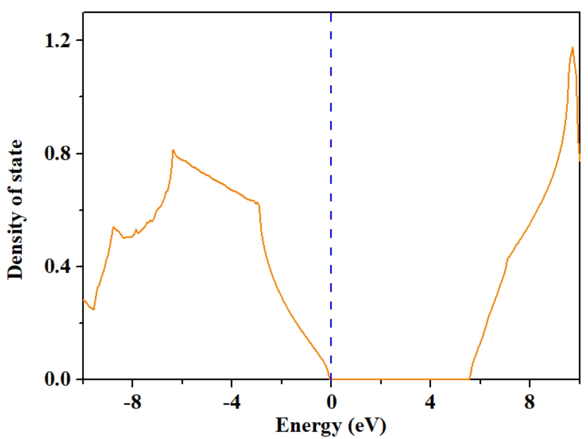
Local Density of States
In some case, we need to analysis the local density of state (LDOS).
For instance, the R6G molecules adsorbing on the graphdiyne,
We need to withdraw the density of states of all the atoms in R6G (https://doi.org/10.1038/s41467-023-42038-3):

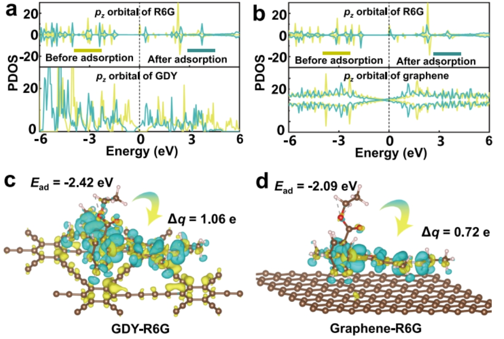
The LDOS can be obtained in the follow steps:
Calculating the density of state with setting:
> LORBIT=10 or LORBIT=11
in INCAR.
After run VASP, use
> qvasp -dosd
to obtained DOS0.dat, DOS1.dat, DOS2.dat, DOS3.dat….
Analysis the atomic number of R6G in POSCAR, here the R6G molecule is 188 189 190 191 … 251
Run command:
> for ((i=188; i<=251; i++)); do echo -n "$i "; done
to produce list of:
188 189 190 191 192 193 194 195 196 197 198 199 200 201 202 203 204 205 206 207 208 209 210 211 212 213 214 215 216 217 218 219 220 221 222 223 224 225 226 227 228 229 230 231 232 233 234 235 236 237 238 239 240 241 242 243 244 245 246 247 248 249 250 251
Run command:
> qvasp -ldos 188 189 190 191 192 193 194 195 196 197 198 199 200 201 202 203 204 205 206 207 208 209 210 211 212 213 214 215 216 217 218 219 220 221 222 223 224 225 226 227 228 229 230 231 232 233 234 235 236 237 238 239 240 241 242 243 244 245 246 247 248 249 250 251
to obtain LDOS.dat.
Plot the LDOS.dat, If the LORBIT is set to 10 in INCAR.
The 1th line is the energy of R6G.
The 2th line is s orbital of R6G.
The 3th line is the p orbital of R6G.
The 4th line is the d orbital of R6G.
The last line is the total LDOS of RG6.
Redefine Lattice for PDOS
We need to be careful to calculate the projected density of state, especially for the px, py, pz, dx2-y2, dxy …
We take IrO2 as an example.

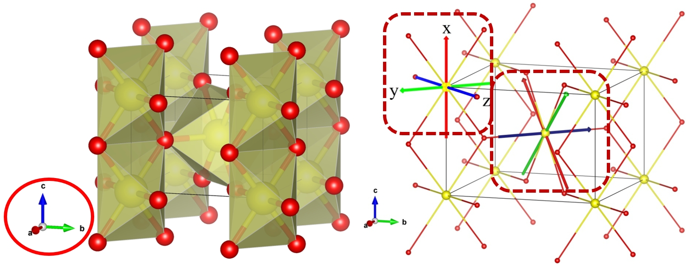
Notablly, the direction of axis is different with the projected direction of octahedron.
In this regard, we usually obtain wrong results if we directly run:
> qvasp -c2p IrO2.cif
Transfer done of IrO2.cif !
> cat POSCAR
IrO2
1.0
4.4990000725 0.0000000000 0.0000000000
0.0000000000 4.4990000725 0.0000000000
0.0000000000 0.0000000000 3.1459999084
Ir O
2 4
Direct
0.000000000 0.000000000 0.000000000
0.500000000 0.500000000 0.500000000
0.311000000 0.311000000 0.000000000
0.689000000 0.689000000 0.000000000
0.189000000 0.811000000 0.500000000
0.811000000 0.189000000 0.500000000
As a result, the calculated results are:

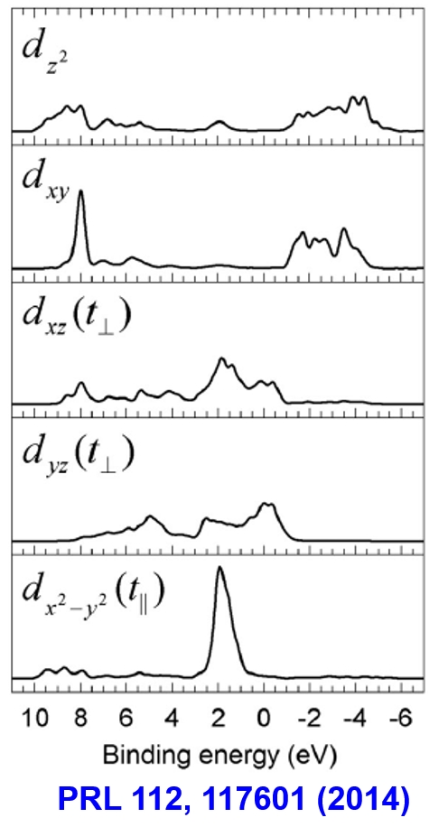
Then we need to adjust the lattice to match the projected direction of octahedron.
o=[0.50000 0.50000 0.50000] ##### is center of octahedron
x=[0.81100 0.18900 0.50000] #### is coordination of oxygen in octahedron
z=[0.68900 0.68900 1.00000] #### is coordination of oxygen in octahedron
We can use “qvasp -redlat” to redefine lattice vectors:
> qvasp -redlat
Define the atomic coodinate of center:0.5 0.5 0.5
Define the atomic coodinate along x direction:0.811 0.189 0.5
Define the atomic coodinate along z direction:0.689 0.689 1.0
The new lattice constants are:
3.181273408558278 2.5273493070689503 1.9320988535937005
-3.181273408558276 2.5273493070689512 1.9320988535937005
-5.549619643138128e-16 -1.9106760761441268 2.4993264956884857
The new lattice constants are written in POSCAR_redlatt.
Then the POSCAR can be revised to “POSCAR_redlatt”:
> cat POSCAR_redlatt
Transfer by qvasp
1.0
3.1812734085582779 2.5273493070689503 1.9320988535937005
-3.1812734085582761 2.5273493070689512 1.9320988535937005
-0.0000000000000006 -1.9106760761441268 2.4993264956884857
Ir O
2 4
Direct
0.000000000 0.000000000 0.000000000
0.500000000 0.500000000 0.500000000
0.311000000 0.311000000 0.000000000
0.689000000 0.689000000 0.000000000
0.189000000 0.811000000 0.500000000
0.811000000 0.189000000 0.500000000
We can use this POSCAR to obtain the right projected obital density of state:

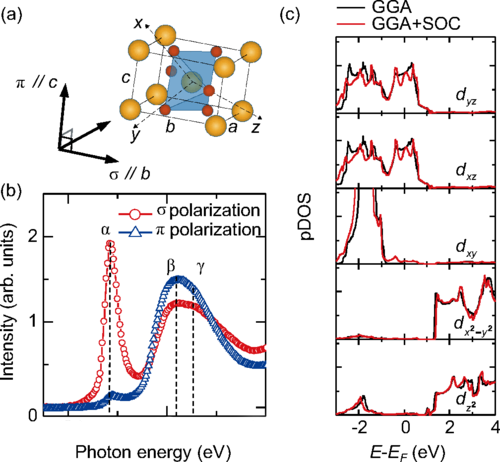
Molecular dynamic toolkit
We can use “qvasp -md” to generate the INCAR for molecular dynamic simulation.
After molecular dynamic simulations, we need to analysis the fluctuation of total energy.
We can run:
> qvasp -mde #Obtain Energy data for MD
Then the mde.dat will be obtained, we can plot mde.dat:

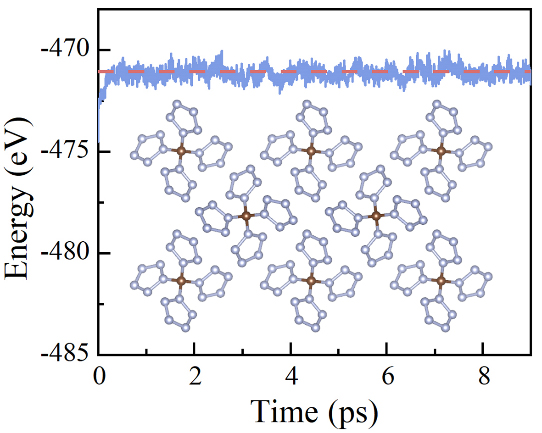
If the magetic system is calculated, we can run:
> qvasp -mdm #Obtain magnetic moment for MD
Then the mdm.dat will be obtained, we can plot mdm.dat to analysis the fluctuation of magnetic moment.
We can also calculate the radial distribution function (RDF) g(r) and the running coordination number CN(r) from a molecular dynamic trajectory. The tool is pure Fortran since v3 – it needs neither python3 nor MDAnalysis:
> qvasp -rdf
Radial distribution function g(r) from XDATCAR (pure Fortran)
Species/types found : Si(216)
Cell volume (A^3) : 4258.6178 atoms: 216
Atom pair to analyze, e.g. "Li O" or type indices "1 2" :
Si Si
r_max (A) [enter 0 = auto 8.1045] :
0
Number of bins (e.g. 200) :
200
Start configuration and sampling interval (e.g. "1001 5", 0 0 = all) :
0 0
Processed 2067 configurations (46440 ordered pairs/frame)
Got it,the results were in rdf.dat
The four answers are the atom pair (element symbols or type indices), r_max
(empty = half of the shortest lattice vector), the number of bins, and the
first frame plus the sampling interval (0 0 = every frame).
rdf.dat has three columns – r (A), g(r) and CN(r) – with the pair and
the number of frames in the header:
# qvasp -rdf : g(r) and coordination number CN(r)
# Pair: Si-Si Frames used: 2067 r_max: 8.104 A bins: 200
# r(A) g(r) CN(r)
2.24900 2.020574 0.323814
2.28952 5.440966 1.057065
2.33004 8.197616 2.201267
2.37057 6.805156 3.184437
...
2.97840 0.000000 4.000000
The normalization follows the standard convention
where \(V_{shell} = 4\pi(r_2^3-r_1^3)/3\). The minimum-image convention is applied in fractional space, which is exact for orthogonal cells and a standard approximation for triclinic ones.
For this 216-atom Si trajectory (a = 16.209 A, 2067 frames) the first peak sits at 2.33 A with g = 8.20 and CN saturates at 4.0 just below 3.0 A, i.e. the expected four-fold coordination of diamond silicon.
Note
XDATCAR stores only the initial cell, so for NPT runs with a large cell drift the result is approximate; prefer NVT or a short NPT trajectory.
We can plot the above data point as:

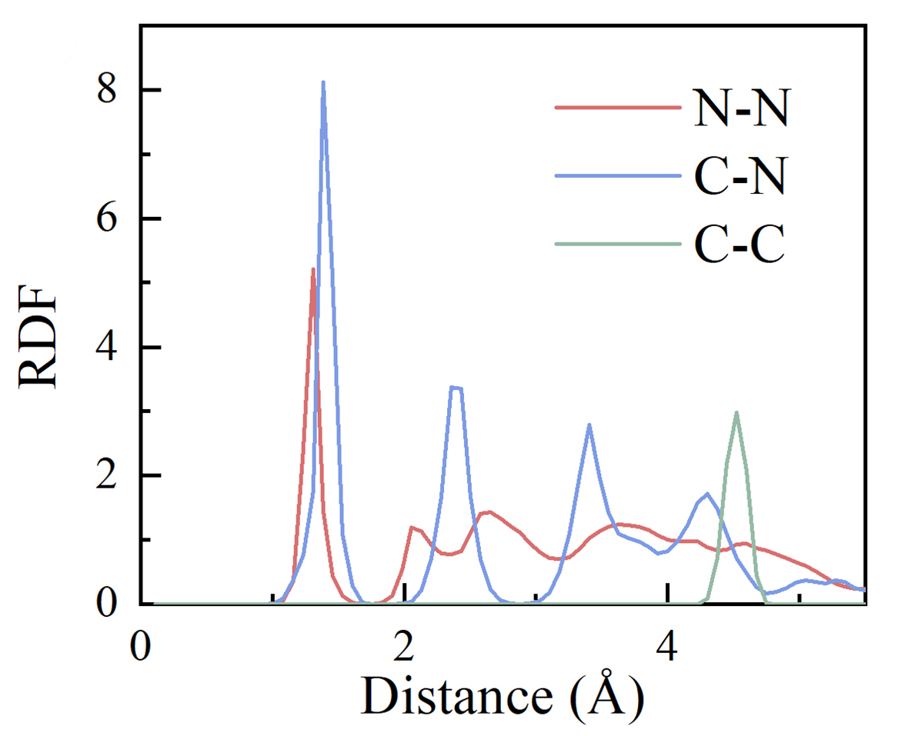
Mean-square displacement and the diffusion coefficient. qvasp -msd
reads the XDATCAR and writes msd.dat:
> qvasp -msd
Mean-square displacement MSD(t) & diffusion coefficient from XDATCAR
==================== MSD estimator ====================
1 = Single time origin : MSD(t) = <|r(t)-r(0)|^2>
2 = Multi-origin / FFT : MSD(t) = <|r(t0+t)-r(t0)|^2>
(FFT autocorrelation, O(N log N))
Select estimator [1/2, enter = 1 (single origin)] : 1
Species/types found : C(54)
Total atoms: 54
MD timestep POTIM (fs) [enter 0 = use OUTCAR/INCAR value 1.0000] : 0
Processed 400 configurations;
Got it, MSD(t) written to msd.dat
Fit D from MSD = 6Dt: start time (fs) [0 = skip fit] : 0
The four answers are the estimator, the timestep (0 = take POTIM from the
OUTCAR or the INCAR), nothing for the atom selection when the cell has a
single species, and the start time of the linear fit. The fit is skipped when
the start time is 0, which is the right choice for a solid: a crystalline
trajectory has a plateau, not a slope, and the diffusion coefficient is
meaningless.
msd.dat has one line per frame, with the time and one MSD column per
species followed by the total:
# qvasp -msd : mean-square displacement (A^2) vs time (fs)
# t(fs) MSD_C MSD_total
0.000 0.00000E+00 0.00000E+00
1.000 6.11480E-05 6.11480E-05
2.000 2.35608E-04 2.35608E-04
...
For a liquid, ask for a fit start time inside the linear regime (typically after 1-2 ps) and the slope gives D from MSD = 6Dt in three dimensions; in two dimensions the prefactor is 4Dt. The multi-origin estimator (option 2) is worth using on long trajectories: a single origin averages over one starting configuration and the MSD is noisy because of it.
Mechanical Properties
We can use “qvasp -elasticd” to withdraw the elastic constants from OUTCAR.
We take the diamond as example.
> ls
C.cif
> qvasp -c2p C.cif
Transfer done of C.cif !
> qvasp -findcell
Analysis precision is 0.100
Read data from POSCAR file
Find cell.vasp from POSCAR, Good Luck!
> mv cell.vasp POSCAR
> cat POSCAR # the lattice constants need to transfer to standard form.
Transfer by qvasp
1.000
0.00000000 1.78340000 1.78340000
1.78340000 0.00000000 1.78340000
1.78340000 1.78340000 0.00000000
C
2
Direct
0.00000000 0.00000000 0.00000000
0.25000000 0.25000000 0.25000000
> qvasp -k 0.03
The density of Brillouin zone is: 0.030 (2*PI/Angstrom)
The k-mesh was calculated as: 16 16 16
KPOINTS was created with k-kmesh: 16 16 16 due to the material dimension
The dimension of material may be wrong and you could revise it manually
> qvasp -elastic ## IBRION=6; NSW=1; NFREE=4; ISIF=3
The INCAR for elastic was produced sucessufully
> qvasp -pbe C
The POTCAR is produced successfully
Lte's check it
TITEL = PAW_PBE C 08Apr2002
> ls
C.cif C.vasp INCAR KPOINTS POSCAR POTCAR
Then submit the VASP job. After job finished, we can use “qvasp -elasticd”:
> qvasp -elasticd
TOTAL ELASTIC MODULI (kBar)
Direction XX YY ZZ XY YZ ZX
--------------------------------------------------------------------------------
XX 11110.9913 1536.9228 1536.9228 0.0000 -0.0000 -0.0000
YY 1536.9228 11110.9913 1536.9228 0.0000 -0.0000 -0.0000
ZZ 1536.9228 1536.9228 11110.9913 0.0000 0.0000 -0.0000
XY 0.0000 0.0000 0.0000 5889.1328 -0.0000 -0.0000
YZ -0.0000 -0.0000 0.0000 -0.0000 5889.1328 0.0000
ZX -0.0000 -0.0000 -0.0000 -0.0000 0.0000 5889.1328
--------------------------------------------------------------------------------
Once we obtain the elastic constant, we can further calculate mechanical property at ELATE.

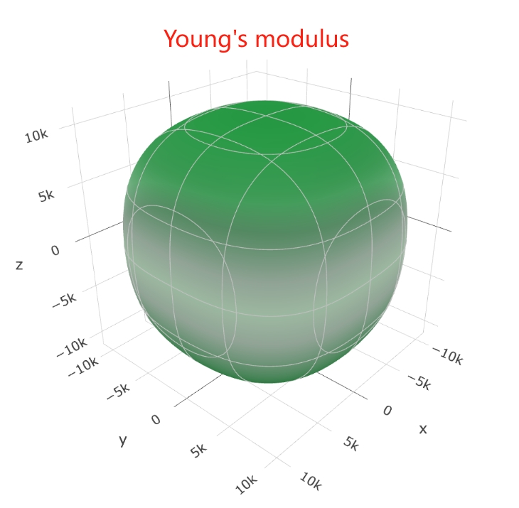

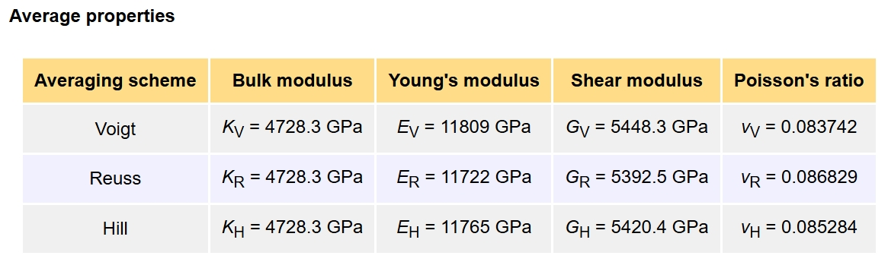
Or
We can use “qvasp -vaspkit” to further calculate the hardness, Poisson’s ratio etc. in terminal.
Equation of state and bulk modulus
The elastic constants come from a single run with IBRION = 6. If you prefer
the energy-volume route, run a series of static calculations at fixed volumes
and let qvasp -eos fit the result:
> qvasp -eos
Equation-of-state fit: 3rd-order Birch-Murnaghan (vaspkit-102 style)
E-V data file (V(A^3) E(eV) per line) [enter = ev.dat] :
Read 9 E-V points.
E0 = -10.84824201 eV
V0 = 40.89280634 A^3
B0 = 0.55383276 eV/A^3
= 88.73378966 GPa
B0p = 4.25738079
residual chi^2 (eV^2/point) = 2.7557E-09
Got it, fitted curve written to eos_fit.dat
The input is a plain two-column file, one line per volume, and the header is
ignored if it starts with #:
# Si diamond (2-atom fcc primitive cell), VASP 6.5.1 static, PBE PAW
# V (A^3/cell) E (eV/cell, TOTEN)
35.4122 -10.58665506
36.5304 -10.69116850
37.6719 -10.76710553
38.8369 -10.81695814
40.0258 -10.84301698
41.2386 -10.84746588
42.4756 -10.83232480
43.7372 -10.79947865
45.0235 -10.75070200
The fit is the third-order Birch-Murnaghan equation of state, the same one that
vaspkit-102 uses, so the numbers are directly comparable. B0p is the
pressure derivative and chi^2 is the residual per point: for this silicon
example chi^2 = 2.8e-9 eV^2, which is essentially the numerical noise of
the total energies, so the nine points are enough.
eos_fit.dat contains the input data next to the fitted curve, which is what
you want for a publication figure:
# qvasp -eos : 3rd-order Birch-Murnaghan fit
# E0= -10.84824201 eV V0= 40.89280634 A^3 B0= 0.55383276 eV/A^3 B0p= 4.2574
# V(A^3) E_in(eV) E_fit(eV)
35.41220 -10.58666 -10.58661
36.53040 -10.69117 -10.69124
...
The computed bulk modulus of 88.7 GPa is close to the experimental 92-100 GPa of diamond silicon, which is the usual few-percent underestimate of PBE.
Zero Point Energy

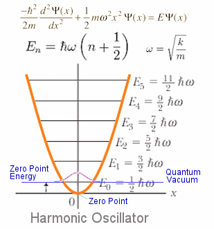
Usually, the total energy from DFT calculation locates at the Zero point (local minima).
However, the lowest energy level is at 1/2 hbar-omega
We can calculate the zero point using “qvasp -zpe” after frequency calculations (set IBRION =5; NFREE =2 in INCAR)
The calculated OUTCAR of the frequency run should be include in folder, then run:
> qvasp -zpe
This is a transition state
Zero point energy is : .607437 eV
12 f/i= 27.463662 THz 172.559279 2PiTHz 916.089135 cm-1 113.580618 meV
The calculated zero point energy is 0.607437 eV.
Thermal corrections: H(T), S(T) and G(T)
The zero point energy is the T = 0 limit of the vibrational free energy. At a finite temperature the harmonic partition function also contributes to the enthalpy and to the entropy, and those are what you need to compare an adsorption energy with an experiment or to build a phase diagram. “qvasp -thermo” computes them:
> qvasp -thermo
================== Thermal correction mode ==================
1 = Gas molecule (vibration + translation + rotation
+ electronic entropy + PV)
2 = Surface adsorbate (vibrations only)
Select mode [1/2, enter = 2 (surface)] : 2
Warning: 3 imaginary mode(s) (f/i) skipped from the corrections.
Read 3 harmonic modes; frequencies < 50 cm-1 clamped to 50 cm-1.
Temperature (K) [enter = 298.15] :
================ Harmonic thermal corrections (adsorbate) ===============
Temperature (K) : 298.15
Zero-point energy E_ZPE : 0.276962 eV = 6.386888 kcal/mol
Thermal corr. to H(T) : 0.327965 eV = 7.563043 kcal/mol
Thermal corr. to G(T) : 0.203397 eV = 4.690436 kcal/mol
Entropy S(T) : 40.3119 J/(mol*K) = 0.124568 eV (T*S)
(only vibrations; freqs < 50 cm-1 clamped to 50 cm-1)
=========================================================================
Got it, temperature scan (100-1000 K) written to thermo.dat
The two modes answer different questions:
Surface adsorbate (mode 2, the default) keeps only the vibrational contribution. The translational and rotational degrees of freedom of an adsorbate are not free — they are frustrated — so adding them would double-count the modes that the frequency calculation already found.
Gas molecule (mode 1) adds translation, rotation, the electronic entropy and the PV term, and therefore also asks for the pressure, the spin multiplicity and the rotational symmetry number. It decides between the linear and the non-linear rotor from the number of modes.
Two details are worth knowing because they are easy to trip over:
Imaginary modes are skipped, not clamped. A frequency that came out as
f/ihas no harmonic partition function; including it would give a complex free energy. The warning tells you how many were dropped, and if that number is large the structure is not a minimum and the correction means nothing.Only the entropy is clamped, and only below 50 cm-1. A very low real frequency has a large entropy that diverges as the frequency goes to zero, so the entropy uses 50 cm-1 as a floor. The ZPE and H(T) keep the raw frequency, because the harmonic oscillator energy is well behaved there. For this example the entropy would be 86.56 instead of 40.31 J/(mol*K) without the clamp, and G would be off by 0.14 eV.
thermo.dat contains the same quantities on a temperature grid (100-1900 K in
steps of 100 K), so you can plot G(T) directly:
# qvasp -thermo : harmonic thermal corrections (eV)
# modes: 3 (imaginary skipped, freqs < 50 cm-1 clamped to 50 cm-1)
# T(K) ZPE(eV) H(T)(eV) T*S(eV) G(T)(eV)
100.00 0.276962 0.293816 0.023278 0.270538
200.00 0.276962 0.311049 0.069899 0.241150
300.00 0.276962 0.328283 0.125659 0.202624
...
1900.00 0.276962 0.623565 1.424719 -0.801153
Note that the ZPE column is constant, as it must be: it is a zero-temperature quantity. G(T) falls with temperature because the entropy term grows faster than H(T).
Gas-phase molecules. Mode 1 is the other half of the story. For a free molecule the translational and rotational degrees of freedom are real and must be added, and the tool asks for the extra data it needs:
> qvasp -thermo
================== Thermal correction mode ==================
1 = Gas molecule (vibration + translation + rotation
+ electronic entropy + PV; vaspkit 502 style)
2 = Surface adsorbate (vibrations only; vaspkit 501 style)
Select mode [1/2, enter = 2 (surface)] : 1
================ qvasp -thermo gas : ideal-gas thermal corrections ================
(vaspkit-502 workflow: vibration + translation + rotation + electron + PV)
Molecule: 2 atoms, 1 vibrational modes
Geometry : linear rotor
Molecular mass (amu) : 2.000000
Rotational inertia I : 4.5638E-48 kg*m^2
Warning: 3 imaginary mode(s) skipped.
Temperature (K) [enter = 298.15] : 298
Pressure (atm) [enter = 1.0] :
Spin multiplicity [enter = 1] :
Rotational symmetry number [enter = 2.0] :
================ Gas-phase thermal corrections (vaspkit-502 style) ================
Temperature (K) : 298.00
Pressure (atm) : 1.000000
Spin multiplicity : 1.0
Symmetry number sigma : 2.0
Zero-point energy E_ZPE : 0.276578 eV = 6.378051 kcal/mol
Thermal corr. to U(T) : 0.340778 eV = 7.858518 kcal/mol
Thermal corr. to H(T) : 0.366457 eV = 8.450705 kcal/mol
Thermal corr. to G(T) : -0.035207 eV = -0.811901 kcal/mol
Entropy S(T) : 130.0495 J/(mol*K) = 0.401665 eV (T*S)
S = vib 0.000 + trans 117.380 + rot 12.669 + elec 0.000
====================================================================================
Got it, gas T-scan (100-1000 K) written to thermo_gas.dat
Three things are worth noting. The tool decides between a linear and a
non-linear rotor by itself and reports which one it chose, together with the
mass and the moment of inertia it derived from the POSCAR – check those two
numbers, because a wrong geometry (a molecule that drifted during the
relaxation, for instance) is the usual cause of a wrong entropy. The
rotational symmetry number \(\sigma\) is not a DFT quantity: it is 2 for a
homonuclear diatomic, 1 for a heteronuclear one, 12 for methane, and you have
to supply it. And the entropy is decomposed by degree of freedom, so
S = vib + trans + rot + elec lets you see immediately which term dominates;
here translation alone is 117 of the 130 J/(mol*K).
The gas mode writes thermo_gas.dat instead of thermo.dat, so you can
compute the adsorption free energy as the difference of the two files without
them overwriting each other.
Thermoelectric transport: S, sigma, kappa and ZT
qvasp -teprop solves the semiclassical Boltzmann transport equation in the
constant-relaxation-time approximation (CRTA, rigid band) and writes the
Seebeck coefficient, the electrical conductivity, the power factor, the
electronic and lattice thermal conductivities and the figure of merit ZT. The
input is a finished non-self-consistent run with a full k-mesh:
SCF (CHGCAR) -> NSCF (ICHARG = 11, ISYM = 0, ISMEAR = 0, SIGMA = 0.05,
Gamma-centred 16x16x16 full mesh, NBANDS ~ 1.5x)
-> OUTCAR + EIGENVAL -> qvasp -teprop -> thermo.dat
The command asks eight questions, and all of them have a sensible default:
> qvasp -teprop
k-grid detected: 16x16x16
bands:40 states:40 EF= 6.1718 eV V= 40.0258 A^3 atoms=2
NELECT = 8.000 electrons/cell
folded mesh: mirrored 2052 points up to the full 4096-point grid (E(-k)=E(k))
Relaxation time tau (fs) [ 10.0000]:
Temperature Tmin Tmax dT (K) [300 300 100]:
Doping pmin pmax npoints (cm^-3, +p-type/-n-type) [-1e21 1e21 41]:
kappa_L mode: 1=manual kL(300K) 2=Slack model 0=skip [2]:
energy-grid resolution eta (eV, box width = eta/2, 0=auto 0.05) [ 0.0000]:
Fourier cutoff factor x|B| (0=complete-grid interpolation, or e.g. 3.0) [ 0.0000]:
fine-mesh factor per axis (0=auto 2) [ 0.0000]:
Tikhonov regularization lam (0=off, 8=Si-calibrated) [ 8.0000]:
mode: complete-grid interpolation basis (recommended)
Fourier fit: 2044 G-pairs + 7 half-grid cos terms (4096 terms/band); building normal equations...
Tikhonov regularization lam = 8.00
fit RMS residual: worst band #38: 7.01E-02 eV
fit RMS residual: worst near-EF band #6: 3.89E-02 eV
resampling on 32x32x32 mesh (32768 points)...
DOS integral: 80.00 states/cell (NELECT= 8.00)
T(K) doping(1e19) mu-EF(eV) S(uV/K) sigma(S/m) PF(mW/mK2) ke(W/mK) kL(W/mK) ZT
----------------------------------------------------------------------------------------
T= 300.0K maxZT= 3.959 @doping= 0.00 cm-3 S=-9.904E+02 uV/K sigma= 1.334 ke= 0.000 ZT= 3.9594
Output written to thermo.dat (9 columns, documented in header).
The eight answers used here were 10.0 / 300 300 100 /
-1.0e21 1.0e21 41 / 0 / 0.05 / 0 / 2 / 8, i.e. a
single temperature, a symmetric doping scan of 41 points, no lattice
contribution, and the recommended interpolation settings.
How the interpolation works, because it is the part that decides the accuracy:
gcut = 0 (the default) uses the complete-grid basis. All 4096 plane-wave-like Fourier functions of the 16x16x16 mesh are used (1 + 2x2044 pairs + 7 half-grid cosine terms), so the fit reproduces the computed eigenvalues to machine precision at the mesh points. A finite gcut truncates to a sphere around the origin and leaves a 0.2-0.3 eV error at the band edges; it is offered for a quick look, not for production.
The Tikhonov parameter lambda shrinks the high-frequency coefficients (weight \(1/(1+\lambda|R|^2)\)) to suppress ringing where the mesh is undersampled.
lambda = 8is calibrated on silicon:lambda = 0biases the p-type conductivity by up to +30%,lambda >= 16over-regularizes and flattens the band edges.The velocity operator uses real-space lattice vectors \(R = g\cdot A\). An earlier version used the reciprocal vectors, which biased sigma by -46% to -76%; that is fixed, and the residuals printed above are the evidence that the fit is now consistent.
The two residual lines are the quality control you should read first: the worst band over the whole fit (7.0e-2 eV for band 38, which is a high unoccupied band with a strong dispersion) and the worst band near the Fermi level (3.9e-2 eV). If the near-EF residual is larger than the thermal energy \(k_BT\) (26 meV at 300 K), the k-mesh is too coarse for the temperature you asked for.
thermo.dat has nine columns and a documented header:
# qvasp -thermo : semiclassical BTE, rigid band, constant tau
# EF= 6.1718 eV V= 40.0258 A^3 grid=16x16x16 fine=32x32x32
# eta= 0.050 eV tau= 10.00 fs spin factor=2
# doping > 0: p-type (holes); doping < 0: n-type (electrons)
# kappa_L not included (electronic part only)
# T(K) doping(1e19cm-3) mu-EF(eV) S(uV/K) sigma(S/m) PF(mW/mK2) kappa_e(W/mK) kappa_L(W/mK) ZT
300.0 -100.0000 0.5096 -49.78 7.6532E+05 1.8965 6.0910 0.0000 0.0934
300.0 -95.0000 0.5021 -48.17 7.3189E+05 1.6982 5.7431 0.0000 0.0887
...
The doping column is in units of \(10^{19}\,\mathrm{cm}^{-3}\), positive for
p-type and negative for n-type, and mu-EF is the chemical potential the
rigid-band shift had to apply to reach that carrier concentration.
The relaxation time is the one external parameter. CRTA assumes a single constant \(\tau\) with no energy or temperature dependence, so sigma and therefore ZT scale linearly with it. Calibrate it from an experimental mobility (\(\tau = \mu m^*/e\)) or take the same value as the reference calculation you are comparing with; 10 fs is a typical starting point for a heavily doped semiconductor at room temperature.
Accuracy. For silicon this implementation agrees with BoltzTraP2 26.3.1 (the reference implementation of the same method, 81x81x81 FFT mesh) within -6.6% to +4.4% on sigma and +-12.8% on S over the n-type range -5 to -100 x 10^19 cm^-3. For p-type heavy doping the deviations are about +-10% on sigma and +-18% on S, and for p-type light doping sigma is 20-32% too high and S is 21-29% too low: the top of the valence band of silicon has degenerate heavy and light hole bands with a very steep curvature, and the complete-basis interpolation and the star regularization of BoltzTraP2 handle that region differently. A finer mesh (96x96x96) only improves it marginally, so this is a property of the method, not a bug. For quantitative p-type light-doping work use BoltzTraP2 or the experiment.
Note
eta is the resolution of the energy histogram used for the DOS
integration (the box width is eta/2), not a Gaussian broadening. For a
sharply structured band edge reduce it to 0.01-0.02 eV. With kappa_L
mode = 0 the last two columns stay at zero and only the electronic part
is computed; mode 1 takes a manual kL(300 K) and mode 2 uses the Slack
model.
Phonon dispersion
A phonon dispersion needs three things: a supercell with displacements, the
forces on the displaced atoms, and the path you want to plot. qvasp covers the
two ends of that chain – qvasp -phonon writes the phonopy configuration and
qvasp -phonond post-processes an existing phonopy run – while phonopy
itself and VASP do the middle.
Step 1: the phonopy configuration. qvasp -phonon reads the POSCAR,
finds the symmetry with spglib and writes band.conf and mesh.conf:
> qvasp -phonon
The INCAR for phonon spectrum was generated successfully
========================================================
qvasp -phonon: phonopy v4 band.conf / mesh.conf generator
========================================================
POSCAR : POSCAR
atoms : 2
a1 : 0.000000 1.783400 1.783400
a2 : 1.783400 0.000000 1.783400
a3 : 1.783400 1.783400 0.000000
|a|,|b|,|c| = 2.5221 2.5221 2.5221
alpha beta gamma = 60.000 60.000 60.000
Dimension : 3-D material
spglib : # 227 Fd-3m
crystal sys : cubic centering: F
lattice : FCC variant: FCC
path : GXWKGLUWLK,UX
band.conf written to : band.conf
mesh.conf written to : mesh.conf
Reminder : phonopy v4 reads the cell from phonopy.yaml/
phonopy_disp.yaml; create them first, e.g.
phonopy-init vasp -c POSCAR --dim "2 2 1"
then: phonopy --config band.conf -p
The generated band.conf is ready for phonopy v4:
BAND = 0.00000000 0.00000000 0.00000000 0.50000000 0.00000000 0.50000000 ... , 0.62500000 0.25000000 0.62500000 0.50000000 0.00000000 0.50000000
BAND_POINTS = 51
BAND_LABELS = Gamma X W K Gamma L U W L K U X
BAND_CONNECTION = .TRUE.
FORCE_CONSTANTS = READ
and mesh.conf carries MP = 11 11 11 with TETRAHEDRON = .TRUE. for the
DOS. Both files are only the configuration: phonopy still needs the cell and
the force constants, which come from the run below.
Note
qvasp -phonon takes named options only – --dim 3|2|1, --vac N,
--chain N, --n POINTS, --out FILE. Anything else on the command
line is treated as the name of a POSCAR file, so qvasp -phonon 2 2 2
looks for a file called 2 and falls back to a commented template. To
change the number of points per segment use --n 101.
Step 2: displacements, forces and force constants. Outside qvasp:
> phonopy-init -d --dim 2 2 2 -c POSCAR-unitcell # phonopy_disp.yaml, POSCAR-001, SPOSCAR
> qsub vasp.script # static forces on SPOSCAR
> phonopy-init -f vasprun.xml # FORCE_SETS
> phonopy --writefc -c POSCAR-unitcell # FORCE_CONSTANTS
Step 3: post-processing. qvasp -phonond drives the last stage – it
turns FORCE_SETS into FORCE_CONSTANTS, plots the band structure with
band.conf and converts the result to gnuplot data:
> qvasp -phonond
--> phonopy_disp.yaml found (from initialization), no re-init
--> FORCE_CONSTANTS found, keep it
--> MPLBACKEND=Agg phonopy -p --factor=521.471 --config band.conf --band "0.0 0.0 0.0 0.5 0.0 0.5 0.0 0.0 0.0 0.5 0.5 0.5 0.0 0.0 0.0"
...
Spacegroup: Fd-3m (227)
Number of symmetry operations in supercell: 384
Force constants were read from "FORCE_CONSTANTS".
Max drift after symmetrization by symfc projector: -0.00000000 (xx) -0.00000000 (xx)
...
--> phonopy-bandplot --gnuplot > PhononBAND.dat
note: exit code 1 from PhononBAND.dat (ignored; output file is checked instead)
Phonon band data written to PhononBAND.dat
The output is band.yaml (phonopy’s own format) plus PhononBAND.dat, a
two-column k-distance frequency(cm-1) table with the segment end points in
its header:
# End points of segments:
# 0.00000000 0.28036330 0.56072670 0.80352850 1.04633020
0.000000 -0.000020
0.005607 19.734529
0.011215 39.462117
Note
-phonond never re-initialises the cell. It looks for
phonopy_disp.yaml, and if that file is missing it stops with an
explanation instead of silently rebuilding the displacements: a rebuilt
phonopy_disp.yaml can differ in displacement amplitude or supercell
matrix from the one the forces were computed for, and the mismatch would
corrupt the whole spectrum without any error message.
The three-stage chain also means DIM in band.conf must equal the
--dim you used in step 2. phonopy-bandplot exits with status 1 after
writing its data in phonopy 4.8.x; qvasp checks the output file rather than
the exit code for that reason.
The diamond example in Examples_new/9.Post-thermo-lattice/phonond gives
1299.9 cm⁻¹ for the Γ optical mode (the triply degenerate T2g), against 1332 cm⁻¹
experiment – the usual ~2.4 % PBE underestimate – and no imaginary frequency
anywhere along the path.
Optical Property
The absorption spectrum is significant for the photovoltaic device and photocatalyst.
The linear optical properties can be obtained from the frequency-dependent complex dielectric function \(\varepsilon(\omega)\)
where \(\varepsilon_{1}(\omega)\) and \(\varepsilon_{2}(\omega)\) are the real and imaginary parts of the dielectric function, and \(\omega\) is the photon frequency.
The frequency-dependent linear optical spectra, e.g., refractive index \(n(\omega)\), extinction coefficient \(\kappa(\omega)\), absorption coefficient \(\alpha(\omega)\), energy-loss function \(L(\omega)\), reflectivity \(R(\omega)\) can be calculated from the real \(\varepsilon_{1}(\omega)\) and \(\varepsilon_{2}(\omega)\) parts [See Ref. A. M. Fox, Optical Properties of Solids]:
In VASP calculations, we can use “qvasp -optics” to generate the INCAR for optical properties calculations. In which, the INCAR contain:
Optics calculate
ISMEAR = -5
LREAL=.False.
ADDGRID = .TRUE.
ISTART = 1
ICHARG = 2
NEDOS=2000
CSHIFT=0.1
LOPTICS=.TRUE.
# NBANDS=56 # Increase NBANDS about 1.5 times, the raw value can be found in OUTCAR from structural optimization.
Usually, we shoud use the HSE06 functional to obtain more accurate value of band gap.
Note
Two dielectric-function blocks in vasprun.xml. VASP 6 may write more than one <dielectricfunction> block into vasprun.xml: the physical spectrum is the one with comment=”density-density”, while comment=”current-current” is a different response. qvasp -opticsd uses only the density-density block (fixed 2026-11-06); older versions concatenated both, which produced a duplicated, non-monotonic energy axis and mixed real/imaginary values. The energy axis of IMAG.dat/REAL.dat must be monotonic and their row count must equal the number of points in the block.
k-mesh matters. A spectrum from a Gamma-only or 5-point mesh is not converged: the sub-gap :math:varepsilon_2 is then dominated by the coarse sampling/smearing. Use a dense mesh (e.g. 12x12x1 for a 2D sheet) and check that :math:varepsilon_2 vanishes inside the gap before publishing numbers.
NELM = 100
LHFCALC = .TRUE.
HFSCREEN = 0.2
AEXX = 0.25
ALGO = D
TIME = 0.4
PRECFOCK= N
Then we can use “qvasp -opticsd” to obtained absorption spectrum:
> qvasp -opticsd
Please check IMAG.dat,REAL.dat,x,y,z, the unit of absorption coefficient is x10^5 cm^-1
Ref and cite DOI: 10.1039/c7tc02287e
> ls
adsorptionsp.dat IMAG.dat REAL.dat vasprun.xml
#adsorptionsp.dat
first line:Energy (eV)
sencond line: absorption coefficient in a direction
third line: absorption coefficient in b direction
fourth line: absorption coefficient in c direction
We can plot the “adsorptionsp.dat” as follow:

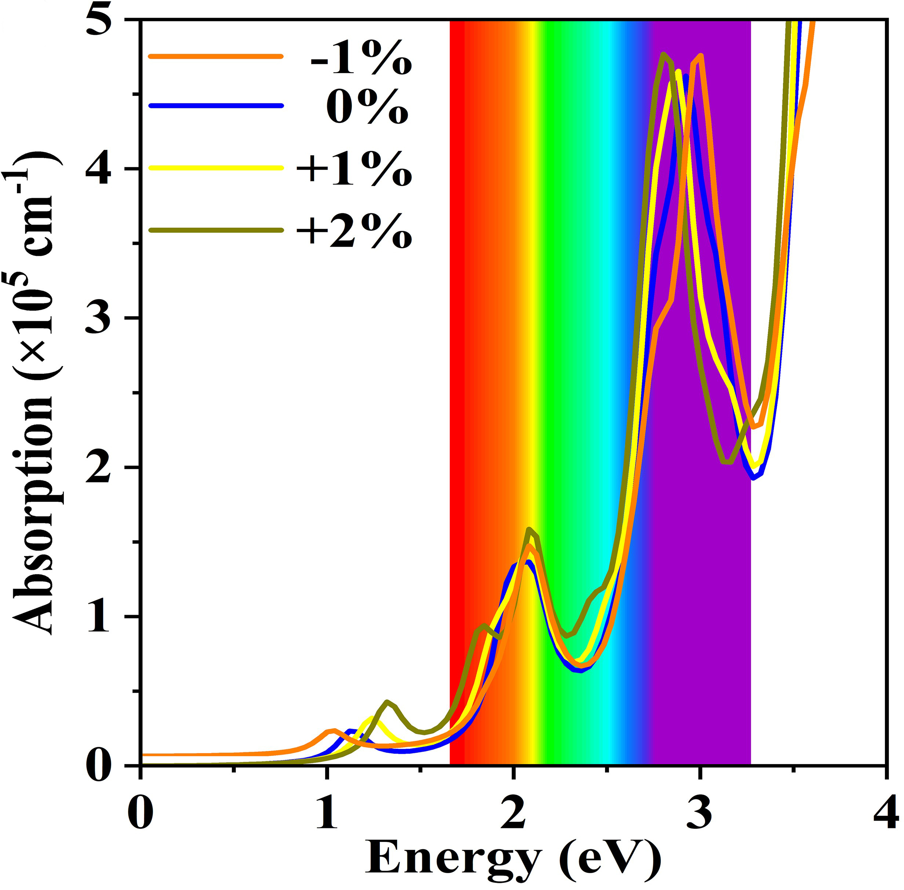
Here we can also use “qvasp -vaspkit” to obtain energy-loss function, refractive spectrum etc.
3D energy band for 2D materials
We can use this function to virtualize the Dirac cones, such as:

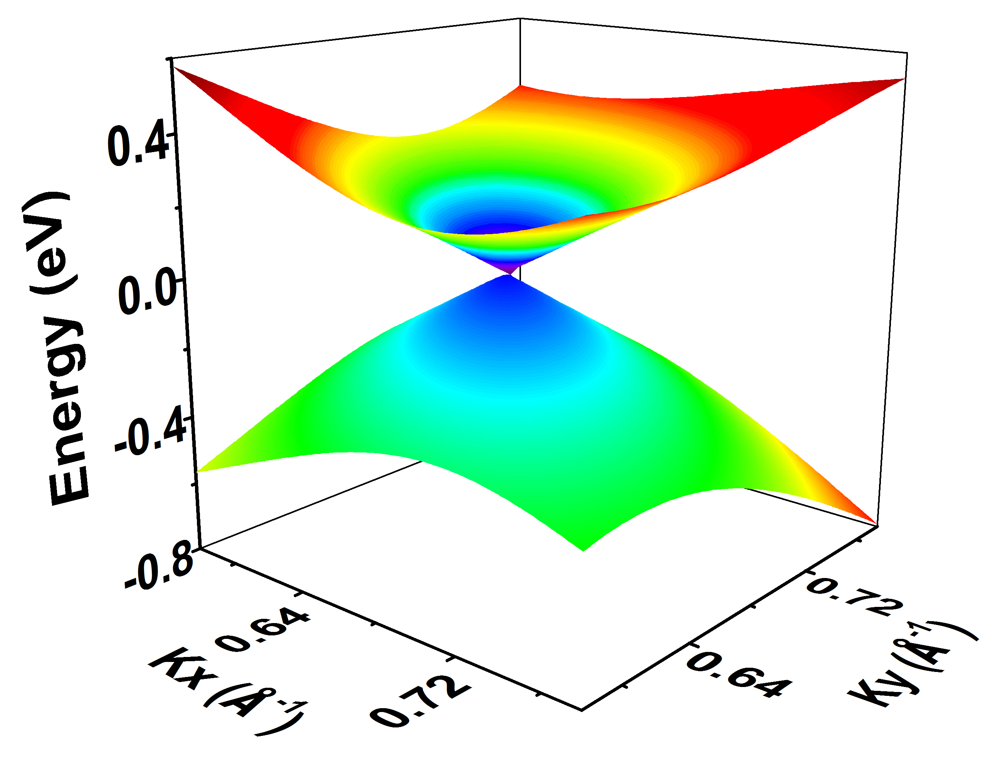
Here we take graphene as an example:
Transfer the hexagonal graphene to orthographic graphene using “qvasp -orthcell”
Do structual optimization to obtain a CONTCAR file. (refer the band structure calculations)
Do self-consistency to obtain a CHGCAR file. (refer the band structure calculations)
Do density of state calculation to obtain EIGENVAL file.
Here we know that the Dirac cone locate at K point, considering energy band fold, the coordination is (0.3333333333333 0.0 0.0)
> cat INCAR
SYSTEM = qvasp
INCAR-basic
PREC = Normal
ENCUT = 400 eV
NELMIN= 5
LREAL = F ## set to Auto if the valance electron number > 20
EDIFF = 1E-5
ISPIN = 1 ## For magnetism set
NCORE = 2 ## Important to reduce calculate time, equal sqrt(cpu cores)
Energy Band
NELM = 100
ICHARG = 11
NSW = 0
IBRION = -1
# NBANDS=223 ## users should set this parameter if there is too few conduction band
LCHARG = F
LWAVE = F
> qvasp -3dkpoints
Please input the center point (x,y): 0.3333333333333 0.0 0.0
Please input the length scale: 0.1
How many points in each direction: 20
Get the KPOINTS file in current folder!
> cat KPOINTS
Kpoints for BZ
401
rec
0.23333333 -0.10000000 0.00000000 1
0.23333333 -0.09000000 0.00000000 1
0.23333333 -0.08000000 0.00000000 1
0.23333333 -0.07000000 0.00000000 1
0.23333333 -0.06000000 0.00000000 1
0.23333333 -0.05000000 0.00000000 1
0.23333333 -0.04000000 0.00000000 1
0.23333333 -0.03000000 0.00000000 1
0.23333333 -0.02000000 0.00000000 1
0.23333333 -0.01000000 0.00000000 1
0.23333333 -0.00000000 0.00000000 1
0.23333333 0.01000000 0.00000000 1
0.23333333 0.02000000 0.00000000 1
0.23333333 0.03000000 0.00000000 1
0.23333333 0.04000000 0.00000000 1
0.23333333 0.05000000 0.00000000 1
0.23333333 0.06000000 0.00000000 1
0.23333333 0.07000000 0.00000000 1
0.23333333 0.08000000 0.00000000 1
0.23333333 0.09000000 0.00000000 1
0.24333333 -0.10000000 0.00000000 1
0.24333333 -0.09000000 0.00000000 1
.....
Then we can run VASP jobs.
After job finished, we can withdraw band energy.
The graphene contain 4 carbon atom, contains 16 valence electrons
Herein, the VBM is the 8th band, and the CBM is the 9th band.
run:
> qvasp -3dband
Input Fermi level(Default: read from current OUTCAR):
Confirm Fermi Level: -2.25380000000000
Which band you want to plot(3D): 8
The transfer finished,Please check the the band*.dat !Good Luck!
> mv 3d-band.dat VBM.dat
> qvasp -3dband
Input Fermi level(Default: read from current OUTCAR):
Confirm Fermi Level: -2.25380000000000
Which band you want to plot(3D): 9
The transfer finished,Please check the the band*.dat !Good Luck!
> mv 3d-band.dat CBM.dat
We can plot the VBM.dat and CBM.dat in Origin (Selecting all the data, then Plot –> 3D Surface –> Color Map Surface).
The 3D energy band of Dirac cone is plot.
And Dirac nodal lines can be also plotted using this function:

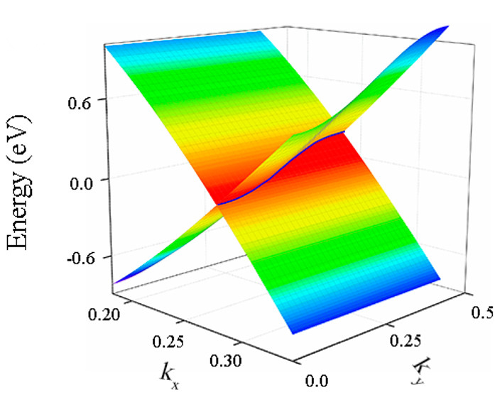
Customizable Tools
qvasp provides a flexible interface to call external toolkits. In v3 the
folder is USERDefine/TooLs inside the installation root (the v2
$qvasppath/exefile/Tools/USERTooLs no longer exists):
Upload the executables to
USERDefine/TooLs.Edit the
help-exfile in the same folder – every line you add is printed byqvasp -helpat the bottom of the table:
> cat USERDefine/TooLs/help-ex
+==================================== Customizable Tools ========================================+
| qvasp -vaspkit Call VASPKIT,ref:Comput. Phys. Commun., 2021, 267: 108033 |
| qvasp -atomkit Call atomkit, ref:https://vaspkit.com/atomkit.html |
| qvasp -post_VASP Call post_VASP toolkit |
| qvasp -den2vasp Transfer density file (CASTEP) to CHGCAR (VASP) |
| qvasp -res2vasp Transfer res format to POSCAR(Chaoyu He) |
| qvasp -ueff Fitting the value of U for LDA+U method (linear response) |
| qvasp -piez Calculate the piezoelectric properties |
Note that -baderd and -rdf used to live here but are built-in commands
since v3, so they are no longer part of the customizable table.
The bundled toolkits are:
**qvasp -vaspkit** # Call VASPKIT, ref: https://vaspkit.com
**qvasp -atomkit** # Call atomkit, ref: https://vaspkit.com/atomkit.html
**qvasp -post_VASP** # Call post_VASP toolkit
**qvasp -den2vasp** # Transfer density file (CASTEP) to CHGCAR (VASP)
**qvasp -res2vasp** # Transfer res format to POSCAR (Chaoyu He)
**qvasp -ueff** # Fit the Hubbard U by the linear-response method
**qvasp -piez** # Extract the piezoelectric tensor
-ueff runs a small linear-response workflow: it asks for the number of
supercells, prepares the VASP_Ueff_1.0 job set and finally prints the
response table (U, DFT, NSCF, SCF) from which U is fitted.
-piez reads a finished DFPT run and prints the elastic tensor C_ij, the
compliance S_ij and the electronic/ionic dielectric tensors.
Welcome to customize your own toolkit in qvasp.
Then you can package your own qvasp using “tar -zcPvf qvasp-cus.tar.gz qvasp-vxx”.
And you can install qvasp-cus.tar.gz in other Linux system.
Clean output files
We can remove all the files in current folder exclude the input files of VASP “POSCAR,POTCAR,INCAR,KPOINTS,vdw_kernel.bindat and executable files”:
> ls
1.cif CHGCAR EIGENVAL hosts KPOINTS OUTCAR POTCAR vasp63.o53599 XDATCAR 1.vasp
CONTCAR ex01.cif IBZKPT log PCDAT REPORT vasprun.xml CHG DOSCAR ex01.vasp INCAR
OSZICAR POSCAR vasp63.e53599 WAVECAR
> qvasp -clean
This script clear all file but POSCAR INCAR KPOINTS POTCAR and executable file
---------- Clean Done ----------
> ls
INCAR KPOINTS POSCAR POTCAR
Magnetic ground state, exchange parameters and Curie temperature
The magnetic suite “qvasp -magm” provides six sub-tools for magnetic materials. A typical workflow runs as follows (the example of graphitic carbon nitride g-C4N3 can be found in Examples/Tools/magm, see Du, Sanvito and Smith, Phys. Rev. Lett. 108, 197207 (2012)):
Initialize MAGMOM from a finished spin-polarized run:
> qvasp -magm
1) spinden : spin density and magnetic moment from CHGCAR
2) magconf : generate FM/AFM/FIM magnetic configurations
3) fitj : exchange parameters J from total energies
4) curie : Curie/Nel temperature (Monte Carlo + mean field)
5) mae : magnetocrystalline anisotropy energy (SOC)
6) maginit : initialize MAGMOM from OUTCAR
Choose: 6
The tool reads the magnetization table of OUTCAR (run with LORBIT = 11), rounds the moments to integers, writes “MAGMOM = …” into INCAR (a backup of the old INCAR is kept as INCAR.bak-magmom), and prints the per-atom magnetic moments.
(2) Generate the competing spin configurations with sub-option 2 (magconf). It creates FM/AFM/… INCARs (or appends run-length MAGMOM lines) according to the magnetic atoms that you select. Perform static calculations (NSW = 0, same geometry!) for every configuration and read their total energies.
(3) Map the total energies onto the Heisenberg model with sub-option 3 (fitj). Prepare one folder per configuration containing the OUTCAR, feed the folder names one per line, select the magnetic atoms, and give the distance cutoffs of the exchange shells (from the pair-distance table printed on the screen). fitj least-squares fits E = E0 - sum J_n*C_n and writes J_table.dat with the coordination numbers and J_n (meV).
(4) Estimate the ordering temperature with sub-option 4 (curie). It reads J_table.dat, runs a classical Heisenberg Monte Carlo on the provided cell to locate the chi(T) peak (Tc), and also prints the mean-field estimate kB*Tc = (2/3)*J0*S(S+1).
(5) The magnetocrystalline anisotropy energy (sub-option 5, mae) compares the SOC total energies of the x/y/z spin directions (three runs with MAGMOM/SAXIS along x, y, z; magm generates the three INCARs) and writes mae.dat.
(6) Sub-option 1 (spinden) integrates the spin density of CHGCAR inside Bader-like atomic basins, printing the net magnetic moment per atom and in total.
Real-data example: g-C4N3 (validated output). The complete chain has been validated on real VASP 6.5.1 data for graphitic carbon nitride g-C4N3 (28-atom 4xC4N3 cell, ENCUT 500 eV, Gamma 3x3x1, 36-core runs; reference: Du, Sanvito and Smith, Phys. Rev. Lett. 108, 197207 (2012)). The worked example is shipped in Examples/Tools/magm/g-C4N3.
Static energies of the competing states: FM = -234.79117 eV (ground state, m = 3.24 muB) versus AFM = -234.73327 eV (metastable); FIM relaxes back to FM under SCF. The exchange fit (sub-option 3, 2 configurations, 1 shell, R1 = 3.0 A) gives:
# Heisenberg exchange parameters (qvasp -magm -> fit J)
# E = E0 - sum_n J_n * C_n, C_n = sum_{pairs in shell n} s_i s_j
# E0 (eV) = -234.704326
# rms fit residual (meV) = 0.00 meV
#
# n R_max(A) J_n (meV)
1 3.0000 3.618
#
# config E_DFT (eV) E_fit (eV) resid (meV)
run_FM -234.791169 -234.791169 0.00
run_AFM -234.733274 -234.733274 0.00
The positive J1 = +3.618 meV reproduces the ferromagnetic ground state found by the direct total-energy comparison. The Curie temperature (sub-option 4, Monte Carlo + mean field) gives:
MC Tc (chi peak) = 48.0 K
Mean-field Tc = 223.9 K
with the M(T) curve written to curie_MC.dat. The spin-density integration (sub-option 1) resolves the local moments of the AFM state on the C sites (about 0.5 muB with alternating signs) and the 12 magnetic N sites, with a net moment of 0.66 muB.
Bader charge analysis
Run VASP with LAECHG = .TRUE. to obtain AECCAR0/AECCAR2, then:
> qvasp -baderd
Bader charge analysis (Henkelman bader code wrapper)
CHGCAR_sum written (grid 96x96x96)
bader executable: /public/home/yiwc/procedure/qvasp/qvasp-v3.0/bader
atom species Zval Bader_q delta_q (+ = lost e-)
1 Si 4.000 4.2340 -0.2340
2 Si 4.000 3.7660 0.2340
-------------------------------------------------------
sum(Bader_q) = 8.0000E+00 sum(delta_q) = 0.0000E+00
Got it, Bader charges written to bader_charges.dat
The tool builds CHGCAR_sum = AECCAR0 + AECCAR2 internally (replacing chgsum.pl), runs “bader CHGCAR -ref CHGCAR_sum”, parses ACF.dat and combines the Bader charges with the POTCAR ZVAL valences. The “bader” executable of the Henkelman group (https://theory.cm.utexas.edu/henkelman/code/bader/) must be present in the current folder, the qvasp root folder or somewhere in PATH.
Charge density difference
When an adsorbate binds, the interesting quantity is not the total charge but
the rearrangement: total minus the isolated fragments. qvasp -chgdif does
that arithmetic on CHGCAR files, with the same grid convention, without you
having to run chgsum.pl and a manual subtraction:
> qvasp -chgdif
Charge density difference: CHG1 - CHG2 - CHG3 - ... (CHGCAR arithmetic)
Example: total CHGCAR minus isolated slab/adsorbate densities.
How many CHGCAR files (e.g. 2 = CHG1-CHG2) : 2
File #1 (first = total, rest subtracted) : CHG_A
File #2 (first = total, rest subtracted) : CHG_B
Grid: 40 x 40 x 40
Got it, the charge difference density was written to CHGDIFF.vasp
Open it with VESTA and add an isosurface to visualize.
The number of files is not limited to two: 3 subtracts two fragments from
the total, which is what you need for a co-adsorption or for a molecule on a
bilayer. All files must share the same FFT grid; the tool prints the grid it
found so that a mismatch is visible immediately.
CHGDIFF.vasp is a normal CHGCAR-format file, so VESTA opens it directly.
The isosurface value is in electrons/Angstrom^3: for a typical chemisorption
bond, +-0.005 is a good starting point, and the accumulation (blue) and
depletion (yellow) regions should be symmetric around the bond.
d-band centre
The d-band centre is the standard descriptor for the reactivity of a transition
metal surface: the closer it sits to the Fermi level, the stronger the binding
of an adsorbate. qvasp -dband integrates the projected DOS from DOSCAR:
> qvasp -dband
DOSCAR: 5 atoms, NEDOS = 2001, projected columns = 7 (ISPIN=2)
Energy range (E_F shifted to 0): [ -10.8609, 13.8505] eV
Atoms, e.g. "1-5" or "1 3 4" [enter = all] : 1
Integration window (eV vs E_F) [enter = full] :
Atom d-center(UP) d-center(DOWN) d-center(AVG) (eV, E_F = 0)
1 -1.2151 -0.5896 -0.9028
Total: -1.2151 -0.5896 -0.9028
Got it, d-band centers written to D_BAND_CENTER (eV, E_F = 0).
The two questions are the atoms to include (1, 1-5, 1 3 4 or empty
for all of them) and the integration window relative to the Fermi level (empty
= the full DOS range). Restricting the window to, say, -6 2 is useful when
a deep semicore band would otherwise drag the centre down.
For a spin-polarized run the up and down channels are integrated separately and
the average is reported; the sign of the difference tells you which channel
dominates at the Fermi level. D_BAND_CENTER contains the same table in
plain text, one line per atom.
Real-space wavefunction
qvasp -wfn turns a WAVECAR into a real-space file that VESTA can draw,
which is the quickest way to look at the shape of a band-edge state, a
molecular orbital or a surface state:
> qvasp -wfn
============ qvasp -wfn : WAVECAR analysis ============
SPIN = 1 NKPTS = 1 NBANDS = 14 ENCUT = 400.00 eV RTAG = 45200
E_FERMI = -7.976774 eV Omega = 1000.0000 A^3
1 = WFN_REAL + WFN_IMAG (Re / Im parts, CHGCAR grid)
2 = WFN_SQUARED |psi|^2 (probability density, CHGCAR grid)
3 = WFN_COEFF.dat (plane-wave coefficient table)
Select output [1/2/3, enter = 1] : 1
Band index [1..14, enter = 1] : 1
Real-space grid [enter = 0.05 A spacing (qvasp default); 0 = OUTCAR NGXF/NGYF/NGZF; N>1 = N x N x N] : 16
NPW = 18037 K = ( 0.000000 0.000000 0.000000) E(band) = -29.128777 eV occ = 1.0000
sum_G |C_G|^2 (pseudo-wavefunction norm) = 1.094058426
G vectors rebuilt: 18037 (checked against NPW = 18037)
Written WFN_REAL_B0001_K0001.vasp and WFN_IMAG_B0001_K0001.vasp
Real-space grid: 16 16 16 (x fastest, y, z slowest -- CHGCAR order)
Written WFN_INFO.dat (header, norms, conversion factor)
Got it (qvasp -wfn).
The three outputs answer different questions:
1 writes
WFN_REAL_B####_K####.vaspandWFN_IMAG_B####_K####.vasp, the real and imaginary parts on the CHGCAR grid. At Gamma the imaginary part is zero (the example above, where the file is still written for completeness); at a general k-point both parts are non-zero and the phase pattern is what you want to look at.2 writes
WFN_SQUARED, the probability density \(|\psi|^2\). This is the one to plot when you only care about where the state lives.3 writes
WFN_COEFF.dat, the plane-wave coefficient table (Gvectors and complex coefficients). Use it when you want to analyse the plane-wave content yourself rather than look at a picture.
The third question controls the real-space grid: empty means 0.05 A spacing,
0 means the NGXF/NGYF/NGZF of the OUTCAR, and N means an N x N x N
grid. A finer grid costs memory in VESTA without adding information beyond
the plane-wave cutoff, so 16 to 32 is normally enough for a small cell.
Two numbers in the output are worth checking. NPW is the number of plane
waves in the WAVECAR, and the line G vectors rebuilt: 18037 (checked against
NPW = 18037) confirms that the G-vector list was reconstructed consistently
with it. sum_G |C_G|^2 is the norm of the pseudo-wavefunction: it is
close to but not exactly 1 (1.094 here) because the wavefunction is the
pseudo-wavefunction of the PAW method, and the deviation is the usual
augmentation contribution.
IR spectrum
For the IR intensities a Gamma-point DFPT calculation with Born effective charges is required: IBRION = 5..8 plus LEPSILON = .TRUE. (and NPAR = 1 when using IBRION = 5/6). In the finished run folder:
> qvasp -ir
Found 6 modes for 2 atoms (expect 3N = 6).
mode freq(cm-1) I_IR(arb) active
1 2202.2033 0.0000 no
...
Broadening FWHM (cm-1) [enter=10, 0=skip] : 10
Lineshape: G=Gaussian (default), L=Lorentzian :
The intensity of mode m is I = sum_alpha |sum_{a,beta} Z*_{a,alpha beta} e_{a beta}(m)|^2, where Z* are the Born charges (vasprun.xml) and e the
mass-weighted eigenvectors (OUTCAR). The outputs are the mode table ir.dat and
the broadened spectrum ir_spectrum.dat. Silent (non-polar) modes give zero
intensity, which is a quick sanity check of the workflow.
The broadened spectrum uses a Gaussian with the requested FWHM by default
(the same FWHM means sigma = FWHM / 2 sqrt(2 ln 2)); answer L at the
lineshape prompt for the lifetime (Lorentzian) line shape. Lorentzian tails
decay only as 1/Delta^2, so a strong mode leaves visible intensity tens of
cm-1 away; Gaussian tails are negligible and normally look closer to a measured
spectrum.
Raman spectrum
The Raman activity needs the derivative of the dielectric tensor with respect to each normal coordinate, which is obtained from finite differences in two stages:
> qvasp -raman
1 = gen : create displaced LOPTICS runs for every mode
2 = get : collect vasprun.xml and build the spectrum
Choose [enter=1] : 1
Displacement step (A) [enter=0.01] :
Minimum frequency to include (cm-1) [enter=50] :
“gen” reads the Gamma phonons from OUTCAR (IBRION = 5..8 run) and creates, for every optical mode, the pair of folders raman_m<i>_p and raman_m<i>_m holding the +/-Q displaced POSCARs and a static INCAR with LOPTICS = .TRUE. Run VASP in every folder (NBANDS should be large for LOPTICS), then:
> qvasp -raman
Choose: 2
Displacement step used in gen (A) [enter=0.01] :
Broadening FWHM (cm-1) [enter=10, 0=skip] : 10
Lineshape: G=Gaussian (default), L=Lorentzian :
“get” reads the static dielectric tensor (first row of the REAL PART dielectricfunction of each vasprun.xml), forms R = (eps(+Q) - eps(-Q))/(2*step) and the activity S = 45*abar^2 + 7*gamma^2 with the depolarization ratio (results in raman.dat), and writes the broadened raman_spectrum.dat.
Choosing the lineshape
A Gaussian broadening (the default, sigma = FWHM / 2 sqrt(2 ln 2)) mimics an instrument resolution: its tails are negligible, so a single mode stays a single peak.
A Lorentzian is the physical homogeneous (lifetime) line shape, selectable with
L, but its tails decay only as 1/Delta^2: with FWHM = 10 cm-1 a mode at
1292 cm-1 still gives I/I_peak = (FWHM/2)^2 / (Delta^2 + (FWHM/2)^2) =
25/(47.3^2+25) = 1.1 % at 1339 cm-1, i.e. 25.6 for a peak of 2317. That is
mathematically correct, not a broadening error, but it can look like a spurious
shoulder. Comparison on the diamond example:
# Gaussian, FWHM = 10 cm-1 (default)
1291.756 2309.62578
1339.400 0.00000
# Lorentzian, FWHM = 10 cm-1 (answer L)
1291.756 2227.57226
1339.400 25.58247
Frequency fix (imaginary modes)
qvasp -freqfix (the old -zc name still works) removes imaginary frequencies. Two modes are offered:
molecule / Gamma point – reads the soft-mode eigenvector printed by VASP after the dynamical-matrix diagonalisation. The eigenvector is mass-weighted (e = u*sqrt(m)), so it is de-mass-weighted with the POMASS values, normalised and then scaled to a physical amplitude (default 0.10 A, the largest atomic displacement). The corrected structure goes to POSCAR, the old one to POSCAR-bak, and the per-atom displacement vectors to freqfix.dat. All imaginary modes are listed, so the strongest one (or a chosen one) can be followed. Rerun the relaxation and the frequency calculation afterwards.
periodic solid – reads the phonopy FORCE_CONSTANTS (header: n_primitive n_supercell) and imposes the acoustic sum rule, Phi(i,i) = Phi(i,i) - sum_j Phi(i,j). It prints the maximum |sum_j Phi(i,j)| before and after and writes FORCE_CONSTANTS_asr.
Validation on the real diamond force constants (2 primitive / 16 supercell atoms, 32 blocks):
pristine FC before 3.54E-14 after 3.44E-15 eV/A^2 (unchanged) FC + (-2.0 eV/A^2) before 2.000E+00 after 3.44E-15 eV/A^2 (removed)
The independent Gamma-point diagonalisation of those three data sets gives
pristine FC acoustic 0.0, 0.0, 0.0 cm-1 optical 1299.9 (x3) FC with drift acoustic -212.8,-212.8,-212.8 optical 1282.4 (x3) after -freqfix acoustic 0.0, 0.0, 0.0 cm-1 optical 1299.9 (x3)
i.e. the acoustic sum rule removes the spurious imaginary acoustic modes and restores the optical modes to their correct value. Note that the ASR only removes this kind of numerical violation; a genuine soft mode of the crystal must be diagnosed from the supercell/cutoff convergence instead. Rebuild the band structure with phonopy after replacing FORCE_CONSTANTS by FORCE_CONSTANTS_asr.
An ASR (or symmetry) fix only removes numerical imaginary modes (too-small supercell, force-constant truncation). A genuine soft mode – a charge-density- wave or ferroelectric instability – must not be “fixed”: check its convergence with the supercell size and the cutoff first. Carrier effective mass —————————- Prepare a band-structure calculation along the direction of interest (explicit list or line-mode KPOINTS) and run in the finished folder:
> qvasp -effmass
Parsed 41 k-points from KPOINTS.
CBM = 0.2131 eV at k #12
VBM = -0.1086 eV at k #12
Fit which carrier? (e=CBM, h=VBM) [enter=e] : e
Points per direction for the fit [enter=5] : 5
Fitting band 13 around k #12 (E0 = 0.2131 eV)
direction 1: a = 5.6210 eV*A^2 -> m*/m0 = 0.6779 (electron)
direction 2: a = 4.2382 eV*A^2 -> m*/m0 = 0.8989 (electron)
The parabolic fit E(k) = E0 + a*q^2 is performed on both sides of the band corner separately (they may belong to different crystal directions) and m*/m0 = 3.80998212 eV*A^2 / a. The band extremum should be bracketed by the k-path; for anisotropic masses run dedicated paths along each crystal direction.
Surface energy
Prepare one folder per slab (each with OUTCAR/POSCAR or CONTCAR) plus a bulk reference folder, then:
> qvasp -esurf
Bulk reference folder (OUTCAR+POSCAR) [enter=bulk] :
How many slab folders [enter=3] : 3
Slab #1 folder [enter=slab] : slab4
layers N (for the 1/N fit, 0=skip) : 4
...
gamma = (E_slab - N*mu_bulk)/(2A) is reported per slab in eV/A^2 and J/m^2 (esurf.dat). When the layer number N is given for every slab, a linear fit of gamma versus 1/N is performed and the intercept (N -> inf) is printed as the extrapolated surface energy of the bulk-truncated surface.
NEB endpoints and defect sites
“qvasp -neb POS1 POS2” aligns two endpoint structures for NEB: atoms are paired by nearest-neighbour matching (PBC aware), the second endpoint is reordered accordingly, and the interpolated images are generated (folders 01, 02, … between the endpoints).
“qvasp -defect POSCAR” lists the symmetry-inequivalent sites of the cell (spglib), so that a single representative defect/doping calculation per orbit is enough. The inequivalent sites are printed with their Wyckoff-like labels and fractional coordinates.